Cadimage Coverings - 编辑屋檐边
Cadimage Coverings - Edit Roof Edges
在版本 20 中，我们为若干更受欢迎的工具引入了一些新功能。
过去，屋檐边的编辑受到限制。因此我们现在专门创建了一个用于为所选屋顶覆面编辑屋檐边的对话框。
你可以从 Cadimage > Coverings > Edit Roof Edges...（Cadimage > 覆面 > 编辑屋檐边）打开此对话框。
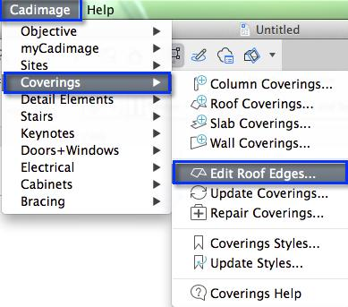
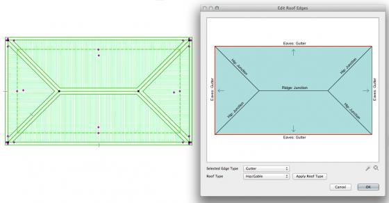
In version 20, we have been able to introduce some new features to a number of our more popular Tools.
In the past the ease of editing Roof Edges was constrained. Therefore we have now created a specific Dialog for Editing the Roof Edges for selected Roof Coverings.
You can access this Dialog from Cadimage>Coverings>Edit Roof Edges...
英文原文对照Official English Original
In version 20, we have been able to introduce some new features to a number of our more popular Tools.
In the past the ease of editing Roof Edges was constrained. Therefore we have now created a specific Dialog for Editing the Roof Edges for selected Roof Coverings.
You can access this Dialog from Cadimage>Coverings>Edit Roof Edges...
Archicad 27 中使用 Coverings 的注意事项
Considerations for Coverings in Archicad 27
设计选项
请注意，在使用设计选项时，由于 Archicad 内部的一些限制，任何已应用的覆面都不会自动继承父级几何体的设计选项，例如 Wall Covering 的父级墙体。
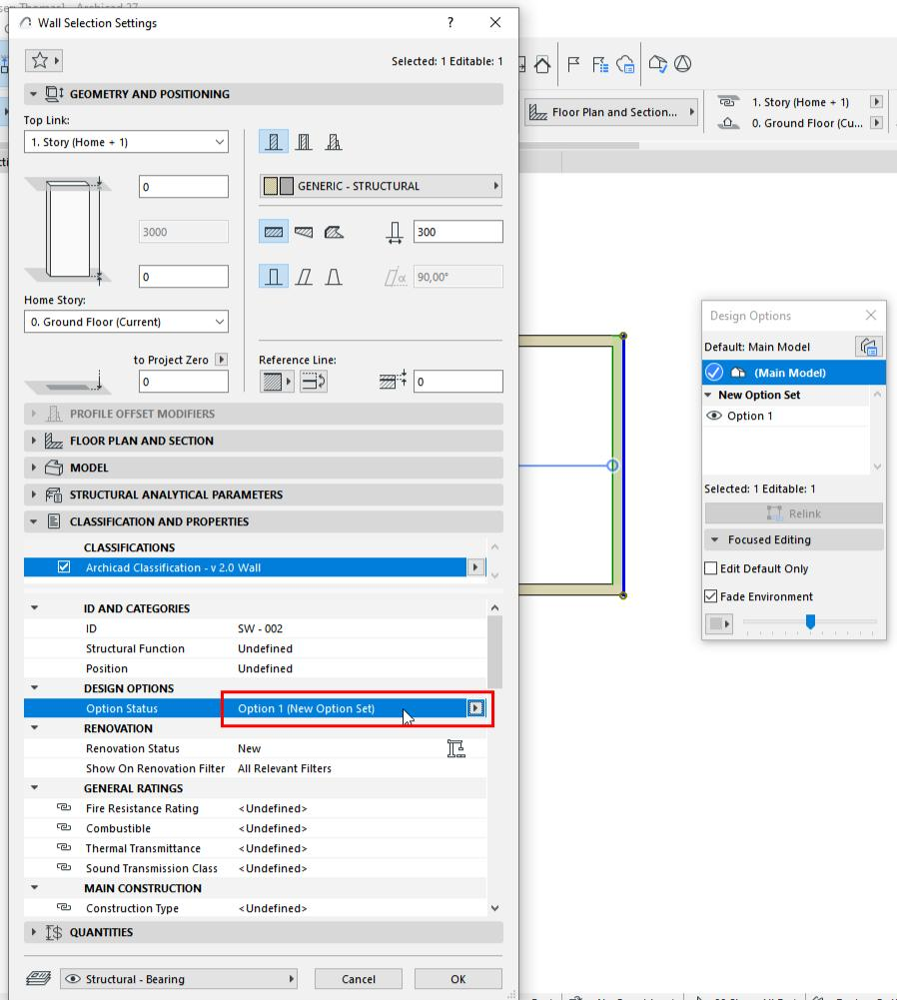
例如，当应用了 Wall Covering 时，务必确保 Design Option 也设置为正确的值。
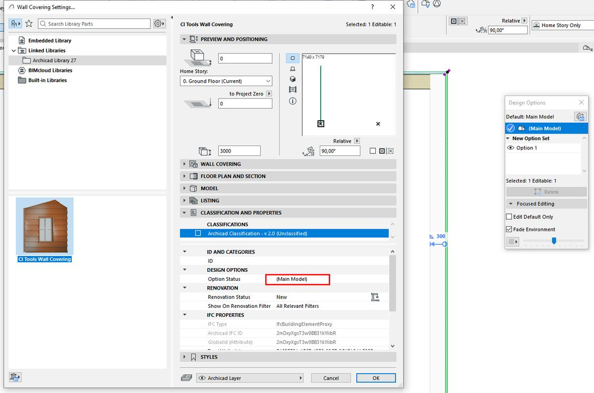
动态编辑辅助线与覆面
请注意，当使用动态编辑辅助线移动任何已应用覆面的构件时，例如下图所示：
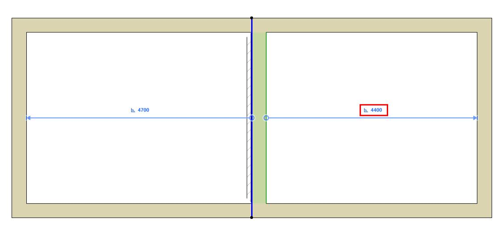
在移动构件后必须更新覆面，在更新之前覆面会保持在原来的位置，参见下图。
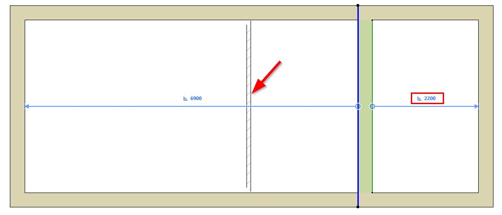
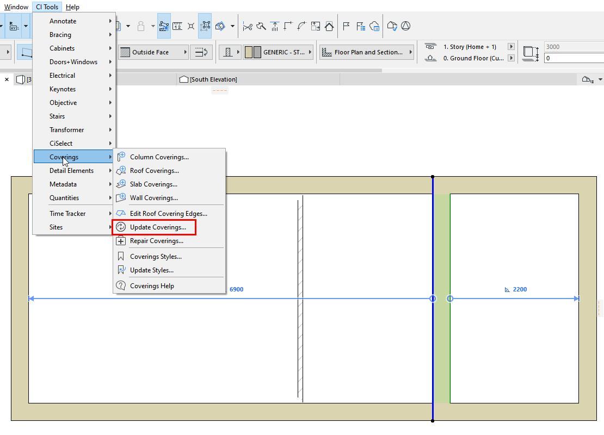
点击 CI Tools 菜单中的 Update Coverings 后，几何体将更新到新位置。
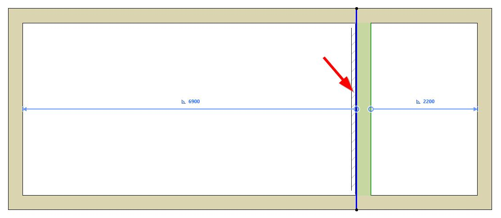
Design options
Please note that when working with design options that, due to some restrictions within Archicad any Covering that is applied, will not automatically inherit the Design option of the parent geometry, such as a Wall in the case of Wall Coverings.
When a for instance a Wall Covering is applied, it is important to ensure that Design Option is also set to the correct value.
Dynamic Editing Guides and Coverings
Please note that when using the Dynamic Editing guides to move any Elements that have Coverings applied, such as in the image below:
It is necessary to Update Coverings after moving the Element, the Covering will remain in its original position until it has been updated, see image below.
By clicking the Update Coverings in the CI Tools Menu, the Geometry will update to the new position.
英文原文对照Official English Original
Design options
Please note that when working with design options that, due to some restrictions within Archicad any Covering that is applied, will not automatically inherit the Design option of the parent geometry, such as a Wall in the case of Wall Coverings.
When a for instance a Wall Covering is applied, it is important to ensure that Design Option is also set to the correct value.
Dynamic Editing Guides and Coverings
Please note that when using the Dynamic Editing guides to move any Elements that have Coverings applied, such as in the image below:
It is necessary to Update Coverings after moving the Element, the Covering will remain in its original position until it has been updated, see image below.
By clicking the Update Coverings in the CI Tools Menu, the Geometry will update to the new position.
覆面阴影
Covering Shadows
你是否希望覆面在三维中投射阴影？
选择你的覆面，打开设置。在 Display Options（显示选项）下将 Shadow（阴影）设置改为 Model View Options（模型视图选项）或 Use local Settings（使用本地设置）。
如果选择“Use Local Settings”，请同时勾选 Cladding（挂板）和 Trims（收边件）。
对于 MVO，你需要在 Model View Options 设置中勾选 Cadimage Coverings 下的 Cladding 和 Trims。
Would you like the coverings to cast shadows in 3D?
Select your coverings, open the settings. Under the Display Options change the Shadow settings to either Model View Options or Use local Settings.
If you select "Use Local Settings" tick both Cladding and Trims.
For MVO, you'll need to tick the Cladding and Trims under the Cadimage Coverings in Model View Options Settings.
英文原文对照Official English Original
Would you like the coverings to cast shadows in 3D?
Select your coverings, open the settings. Under the Display Options change the Shadow settings to either Model View Options or Use local Settings.
If you select "Use Local Settings" tick both Cladding and Trims.
For MVO, you'll need to tick the Cladding and Trims under the Cadimage Coverings in Model View Options Settings.
Coverings 4.42 更新说明
Coverings 4.42 Update Notes
更新 2024/06/26
Coverings 的一次重大升级现已发布，适用于 Archicad 26 —— 此次更新带来了若干新功能，详见下文，但在阅读之前，请先查看这则关于弃用对象的重要说明。
弃用的库对象：
由于 Coverings 对象发生了大量变更，我们为更新后的对象创建了新对象，并将原有对象重命名为 Deprecated（已弃用）。
这些对象仍然可以正常使用，因此你可以继续在现有项目中使用它们，但我们建议凡是新放置的覆面都使用新对象。
除非你需要其中某些新功能，否则无需立即将现有已放置的覆面迁移到新构件上。
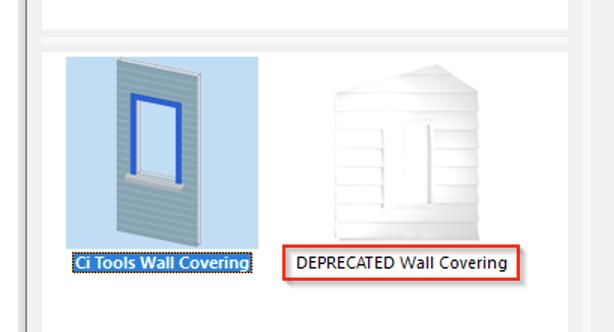
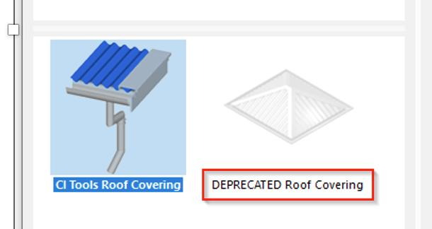
若要原样使用已放置的任何现有对象，只需按下“Edit Settings”按钮，如下所示：
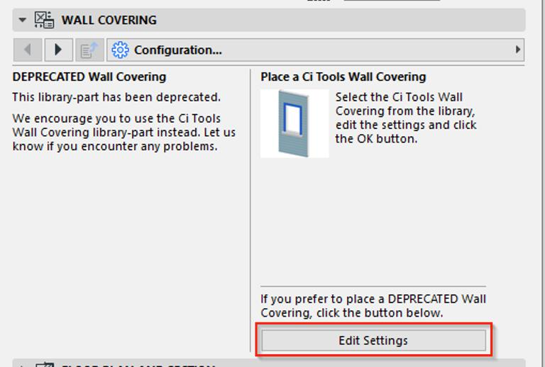
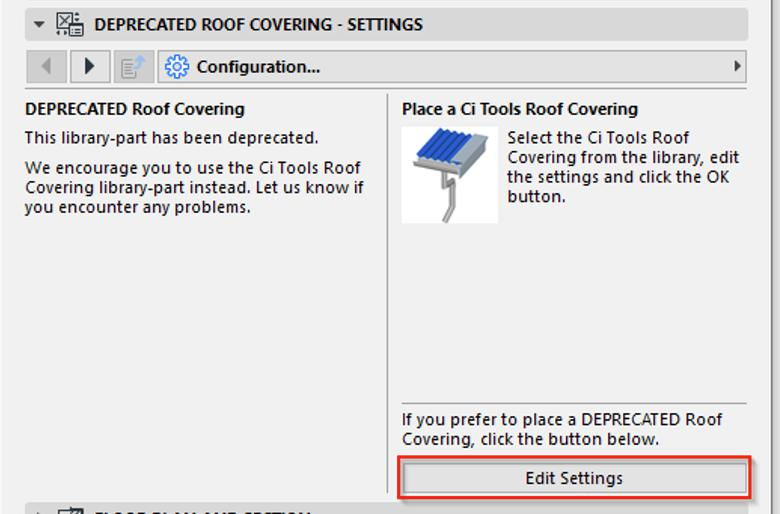
关于本次变更的更多细节，另见这场 Ci Tools 网络研讨会：
墙体覆面
界面重新设计与建筑材料：
作为最新版本的一部分，我们将建筑材料引入了屋顶覆面和墙体覆面。这使得你可以像处理 Archicad 原生构件那样，对体积和面积进行统计。
同时，我们也对用户界面做了一些调整，显著精简了设置项。
在这张图中，可以看到墙体覆面中各项功能的变更与分组方式。左侧为弃用的设置，右侧为新版本的设置。
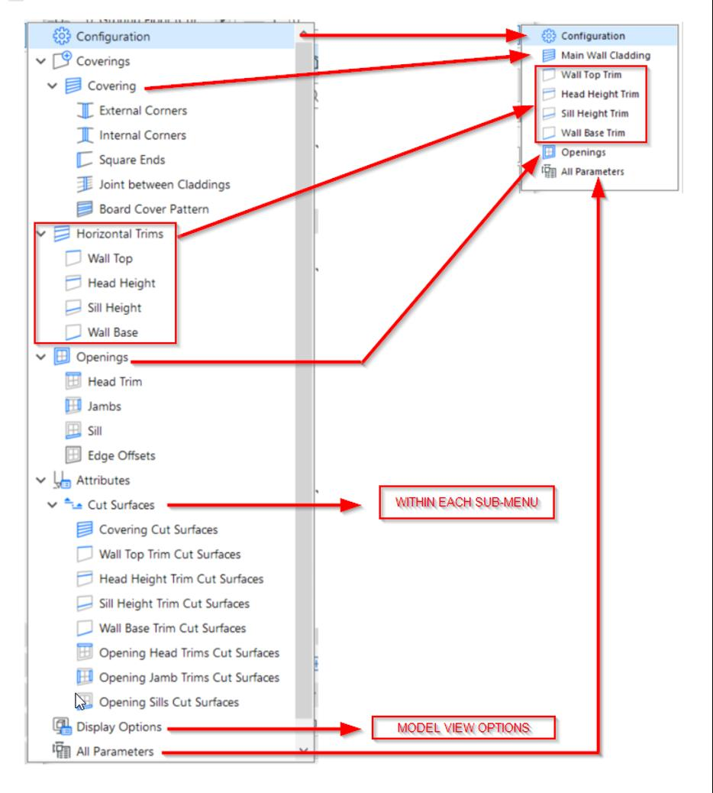
每个子构件的建筑材料都位于各自的子菜单项内，平面图、立面图和剖面图中的线型设置同样如此。
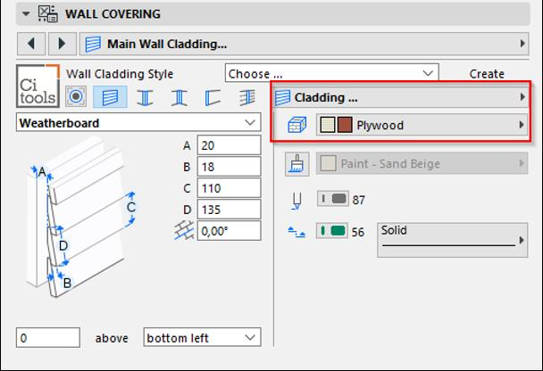
更为重要的是，通过使用位于建筑材料和表面设置右侧的 Uniform/Independent（统一/独立）切换按钮，可以一次性将建筑材料和表面应用到所有收边件和挂板（Cladding）上。你也可以使用 Surfaces Brush（表面画刷）按钮覆盖附着在建筑材料上的表面。
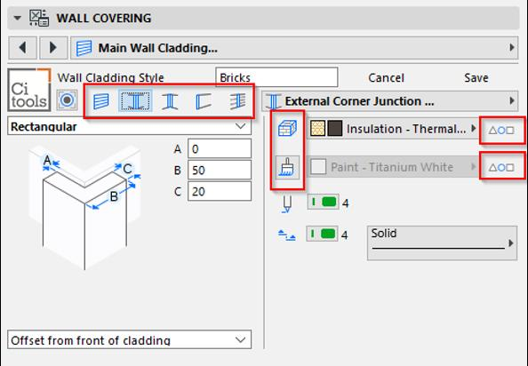
另一项重要优化是“snapshot”（快照）功能。在任一子菜单中编辑时，你可以启用如下所示的快照按钮：
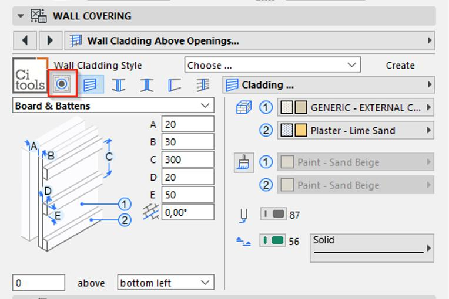
这将“对启用快照那一刻正在调整的覆面部分”生成快照。
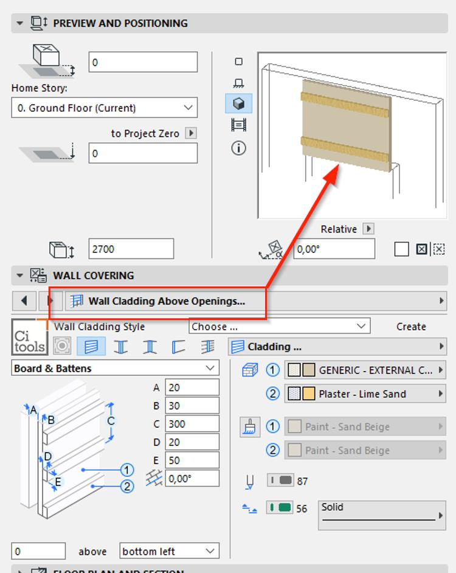
屋顶覆面：
界面重新设计与建筑材料：
作为最新版本的一部分，我们将建筑材料引入了屋顶覆面和墙体覆面。这使得你可以像处理 Archicad 构件那样，对体积和面积进行统计。
同时，我们也对用户界面做了一些调整，显著精简了设置项。
在接下来的两张图中，可以看到屋顶覆面中各项功能的变更与分组方式。左侧为弃用的设置，右侧为新版本的设置：
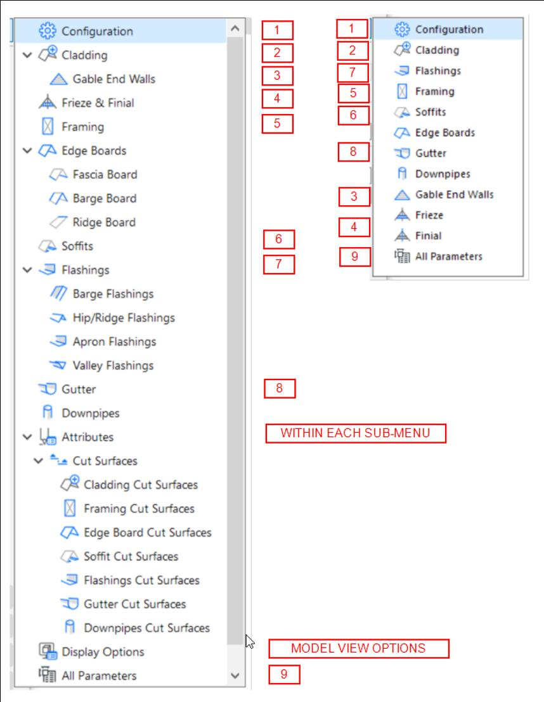
每个子构件的建筑材料都位于各自的子菜单项内，平面图、立面图和剖面图中的线型设置同样如此。
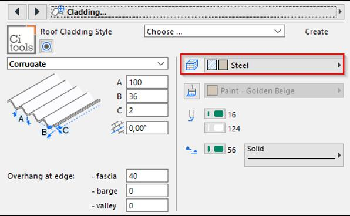
更为重要的是，通过使用位于表面设置右侧、板条尺寸左侧的 Uniform/Independent（统一/独立）切换按钮，可以一次性将建筑材料、尺寸和表面应用到所有子构件上。
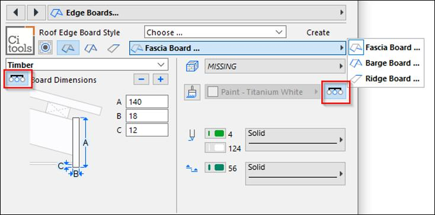
另一项重要优化是“snapshot”（快照）功能。在任一子菜单中编辑时，你可以启用如下所示的快照按钮。
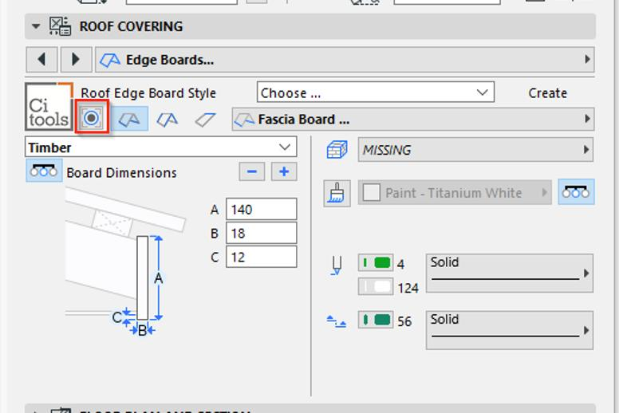
这将“对启用快照那一刻正在调整的覆面部分”生成快照。
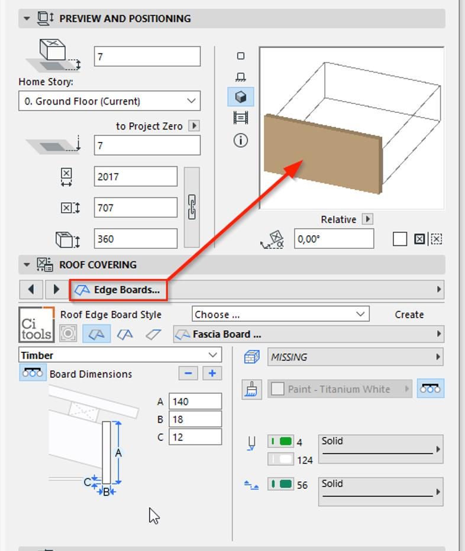
Update 26/06/2024
A major upgrade for Coverings has now been released for Archicad 26 - this new update brings in several new features, detailed below, but before reading that, please see this important note about the Deprecated objects
Deprecated Library Objects:
With the large amount of changes to the Coverings objects, we have created new objects for the Updated ones, and have renamed the existing objects as Deprecated.
They are still fine to use, so you can continue using them in your existing projects, but we recommend that for any New coverings you place, you use the new objects.
There is no need to migrate your existing placed coverings to the new Elements right away, unless you need some of the new features in them.
To use any of the existing objects you have places as they are, simply hit the "Edit Settings" button, as shown below:
There are also more details about the changes in this recent Ci Tools Webinar:
Wall Coverings
Interface re-design and Building Materials:
As part of the latest release, we have incorporated Building Materials into Roof and Wall Coverings. This will allow for volumes and areas to be scheduled as you can with native Archicad elements.
At the same time, we have made some changes to the User Interface that have streamlined the settings significantly
In this image, the changes and grouping of functions in Wall Coverings can be seen. The deprecated settings are on the left and the new release settings are on the right.
The Building Material of each of these sub-elements is located within each sub-menu item, as is the line type in Plan, Elevation, and Section.
Of further importance is that the Building Materials and Surfaces can be applied to all the Trims and Claddings simultaneously by using the Uniform/Independent toggle button to the right of Building Materials and Surface Settings. You can also override Surfaces that are attached to Building Materials with the Surfaces Brush button.
Another important optimization is the ‘snapshot’ function. While editing in any of the sub-menus, you can activate the snapshot button shown below:
This will then ‘snapshot’ the part of the Covering that was being adjusted at the time of activation.
Roof Coverings:
Interface re-design and Building Materials:
As part of the latest release, we incorporated Building Materials into Roof and Wall Coverings. This will allow for volumes and areas to be scheduled as you can with Archicad elements.
At the same time, we have made some tweaks to the User Interface that have streamlined the settings significantly.
In the next two images, the changes and grouping of functions in Roof Coverings can be seen. The deprecated settings are on the left and the new release settings are on the right:
The Building Material of each of these sub-elements is located within each sub-menu item, as is the line type in Plan, Elevation, and Section.
Of further importance is that the Building Materials, Dimensions and Surfaces can be applied to all of the Sub-Elements simultaneously by using the Uniform/Independent toggle button to the right of Surface Settings and left of Board Dimensions.
Another important optimization is the ‘snapshot’ function. While editing in any of the sub-menu’s one can activate the snapshot button shown below.
This will then ‘snapshot’ the part of the Covering that was being adjusted at the time of activation.
英文原文对照Official English Original
Update 26/06/2024
A major upgrade for Coverings has now been released for Archicad 26 - this new update brings in several new features, detailed below, but before reading that, please see this important note about the Deprecated objects
Deprecated Library Objects:
With the large amount of changes to the Coverings objects, we have created new objects for the Updated ones, and have renamed the existing objects as Deprecated.
They are still fine to use, so you can continue using them in your existing projects, but we recommend that for any New coverings you place, you use the new objects.
There is no need to migrate your existing placed coverings to the new Elements right away, unless you need some of the new features in them.
To use any of the existing objects you have places as they are, simply hit the "Edit Settings" button, as shown below:
There are also more details about the changes in this recent Ci Tools Webinar:
Wall Coverings
Interface re-design and Building Materials:
As part of the latest release, we have incorporated Building Materials into Roof and Wall Coverings. This will allow for volumes and areas to be scheduled as you can with native Archicad elements.
At the same time, we have made some changes to the User Interface that have streamlined the settings significantly
In this image, the changes and grouping of functions in Wall Coverings can be seen. The deprecated settings are on the left and the new release settings are on the right.
The Building Material of each of these sub-elements is located within each sub-menu item, as is the line type in Plan, Elevation, and Section.
Of further importance is that the Building Materials and Surfaces can be applied to all the Trims and Claddings simultaneously by using the Uniform/Independent toggle button to the right of Building Materials and Surface Settings. You can also override Surfaces that are attached to Building Materials with the Surfaces Brush button.
Another important optimization is the ‘snapshot’ function. While editing in any of the sub-menus, you can activate the snapshot button shown below:
This will then ‘snapshot’ the part of the Covering that was being adjusted at the time of activation.
Roof Coverings:
Interface re-design and Building Materials:
As part of the latest release, we incorporated Building Materials into Roof and Wall Coverings. This will allow for volumes and areas to be scheduled as you can with Archicad elements.
At the same time, we have made some tweaks to the User Interface that have streamlined the settings significantly.
In the next two images, the changes and grouping of functions in Roof Coverings can be seen. The deprecated settings are on the left and the new release settings are on the right:
The Building Material of each of these sub-elements is located within each sub-menu item, as is the line type in Plan, Elevation, and Section.
Of further importance is that the Building Materials, Dimensions and Surfaces can be applied to all of the Sub-Elements simultaneously by using the Uniform/Independent toggle button to the right of Surface Settings and left of Board Dimensions.
Another important optimization is the ‘snapshot’ function. While editing in any of the sub-menu’s one can activate the snapshot button shown below.
This will then ‘snapshot’ the part of the Covering that was being adjusted at the time of activation.
三维视图中的平屋面覆面
Flat roof covering in the 3D
如果你的三维视图中显示了平屋面覆面，但你的设置不是该样式：
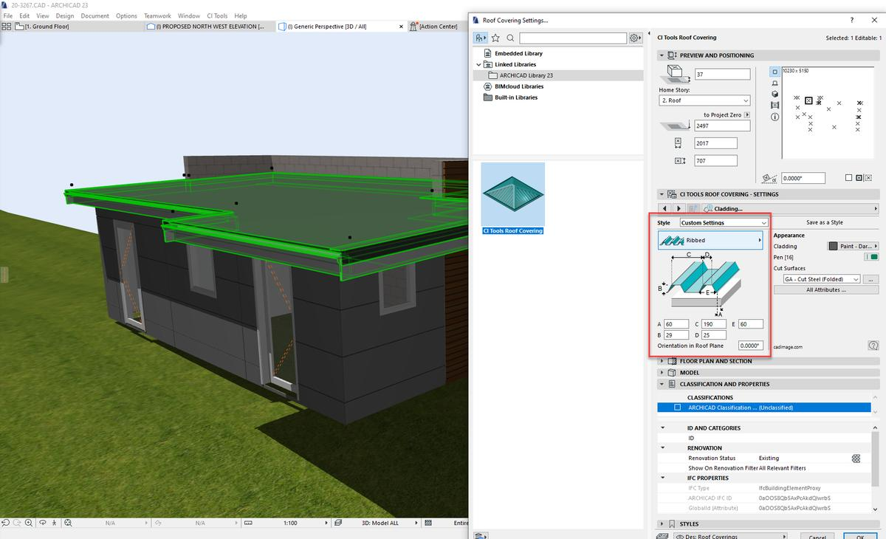
则需要在 MVO（模型视图选项）中将 Model resolution（模型分辨率）改为 Detailed（详细）：
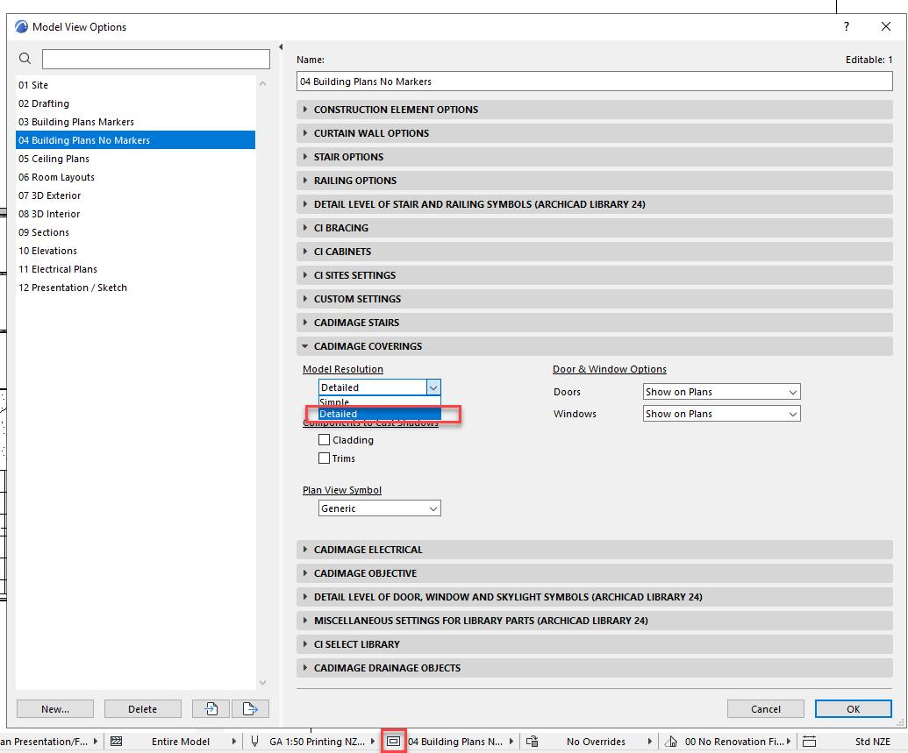
If you have a Flat roof covering in the 3D but your setting is not that style:
Then you need to change the Model resolution to Detailed at the MVO (Model View Option):
英文原文对照Official English Original
If you have a Flat roof covering in the 3D but your setting is not that style:
Then you need to change the Model resolution to Detailed at the MVO (Model View Option):
添加屋顶覆面时遇到问题？
Having problems adding a Roof Covering?
如果你在给屋顶添加 Cadimage Covering 时遇到问题，我们建议你检查以下常见问题：
- 确保至少有一个 Roof（屋顶）元素（基几何体）可供覆面附着。
- 在添加覆面之前，确保基几何体尽可能完整。这意味着你需要在各个元素之间建立正确的相交关系（屋脊、天沟等）。不过在应用 Cadimage Covering 之后你仍可修改这些，但最好从一个完整的屋顶开始整个流程。
- 确保你的 ARCHICAD 屋顶连接正确。如果这里设置不正确，Cadimage Roof Covering 同样无法正确“附着”和显示。
要添加天窗吗？ 天窗可以在屋顶覆面之前或之后添加。
If you are having problems adding a Cadimage Covering to a roof, we suggest you check the following common issues:
- Ensure you have at least one Roof element (the base geometry) for the covering to be applied to.
- Ensure the base geometry is as complete as possible before adding the covering. This means you need to have the correct intersections between the various elements (ridges and valleys etc). You can modify this after the Cadimage Covering has been applied, however it is best to start the process with a complete roof.
- Make sure your ARCHICAD roof connects properly . If this isn't set up correctly the Cadimage Roof Covering will not be able to 'attach' and show correctly either.
Adding Skylights? These can be added before or after the Roof Covering.
英文原文对照Official English Original
If you are having problems adding a Cadimage Covering to a roof, we suggest you check the following common issues:
- Ensure you have at least one Roof element (the base geometry) for the covering to be applied to.
- Ensure the base geometry is as complete as possible before adding the covering. This means you need to have the correct intersections between the various elements (ridges and valleys etc). You can modify this after the Cadimage Covering has been applied, however it is best to start the process with a complete roof.
- Make sure your ARCHICAD roof connects properly . If this isn't set up correctly the Cadimage Roof Covering will not be able to 'attach' and show correctly either.
Adding Skylights? These can be added before or after the Roof Covering.
如何为屋顶覆面添加落水管
How to Add Downpipes to a Roof Covering
当你将屋顶覆面放置到 Archicad 屋顶上时，所有檐沟边都会绘制出来但不带落水管。
每段檐沟最多可添加两根落水管。如果你想在某段檐沟上添加多于两根落水管，请在屋顶边上添加一个节点。
要添加落水管：
- 在平面视图中，点击选中屋顶覆面。
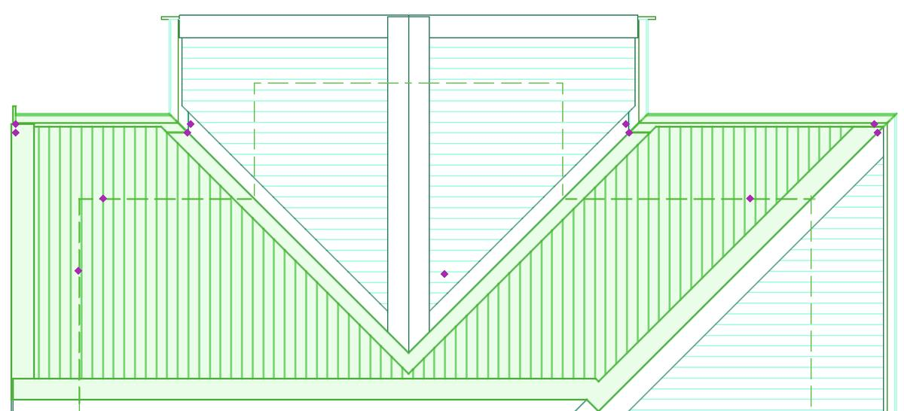
- 在每段檐沟的两端，你会看到一个可调整的热点。拾取它并拖入檐沟中。
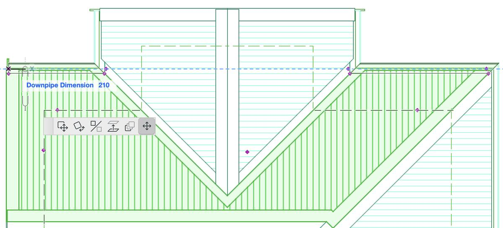
落水管将出现在热点所在位置。
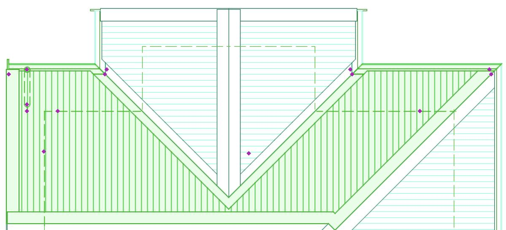
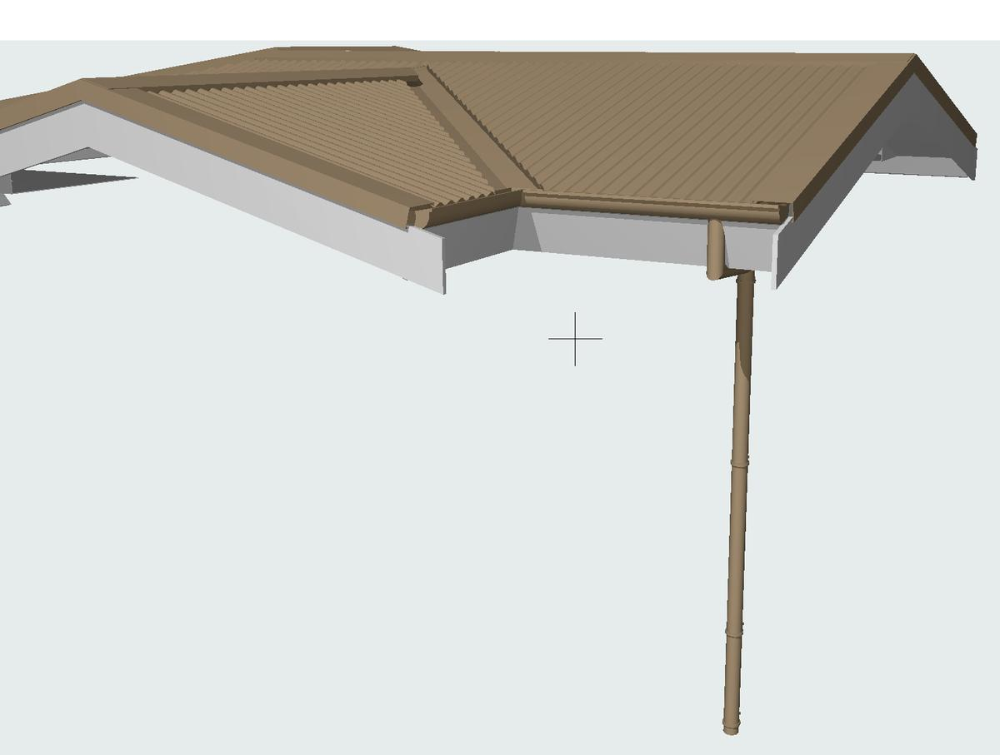
要移动落水管：
- 在平面视图中，点击选中屋顶覆面。
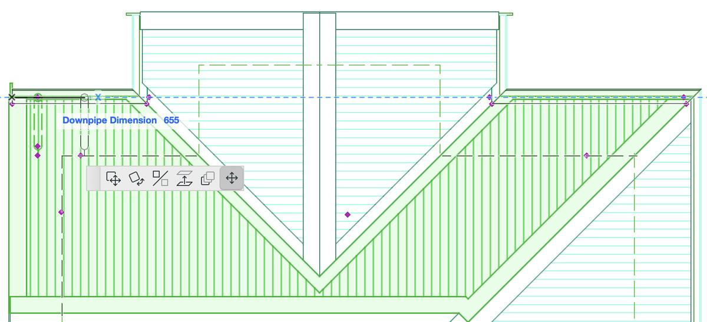
- 移动落水管位置上的热点以重新定位落水管。
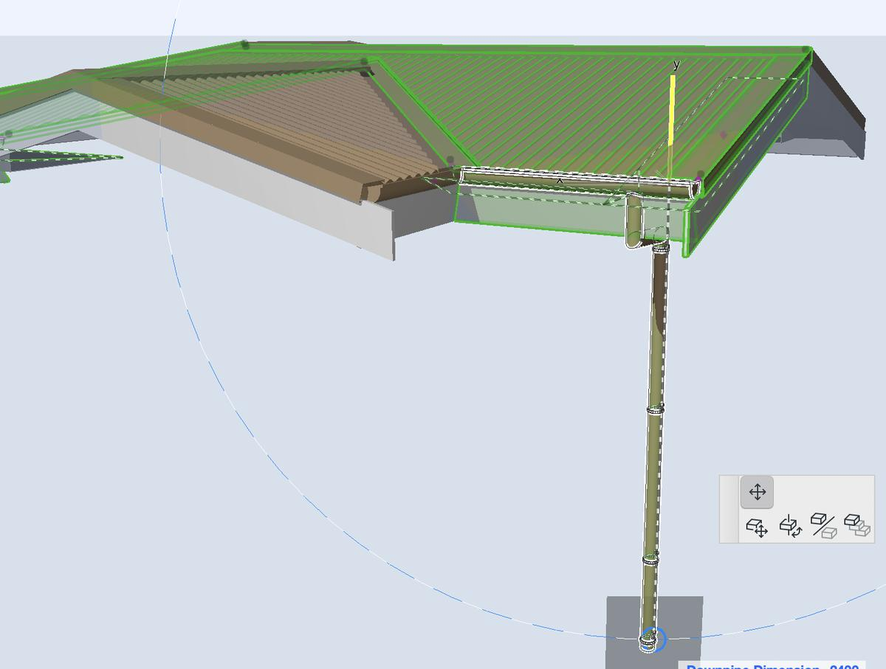
要调整落水管长度：
- 在三维、剖面或立面视图中，点击选中屋顶覆面。
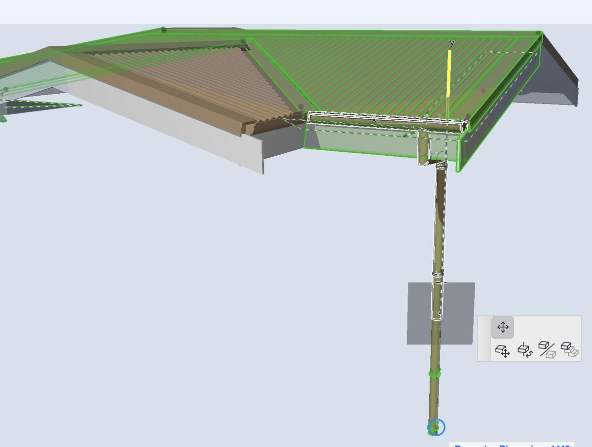
- 在落水管底部，你会看到一个可调整的热点。拾取它并上下拖动以调整落水管长度。
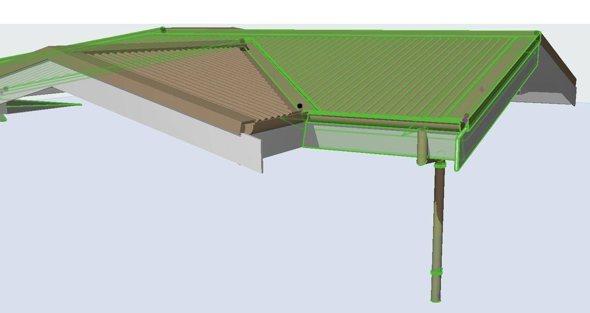
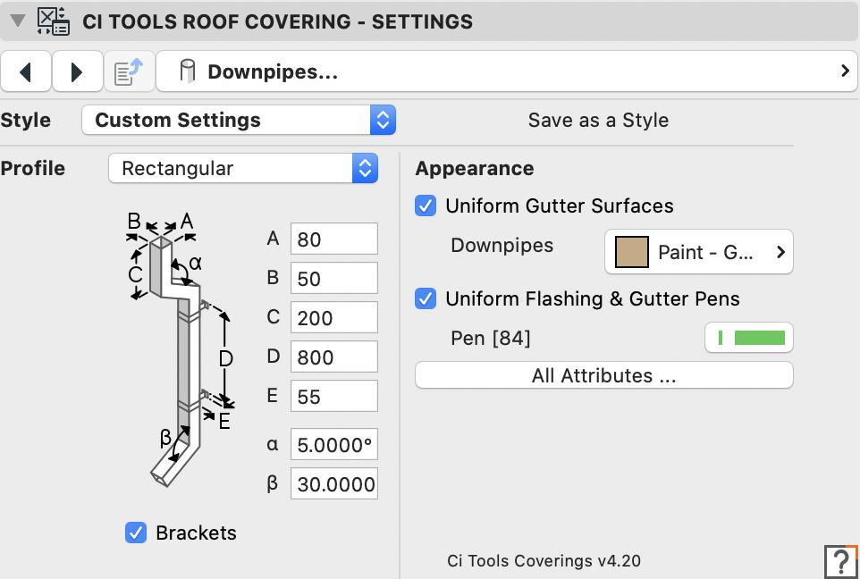
要更改落水管的直径或形状：
- 选择屋顶覆面。
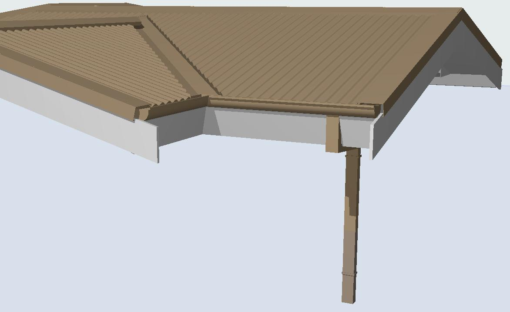
- 打开 Settings 对话框。
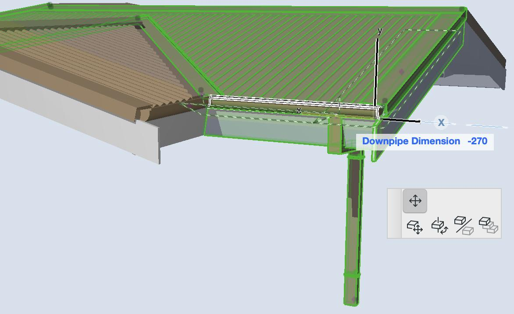
- 在 Downpipes（落水管）页面上，选择形状并设置落水管尺寸。
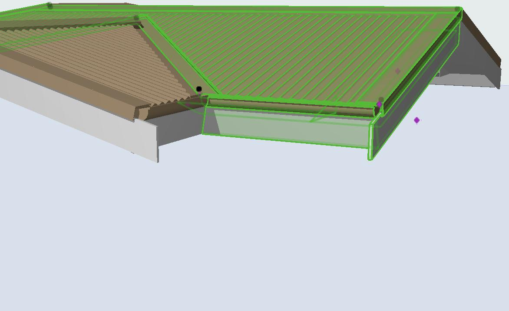
要移除落水管：
- 选择屋顶覆面。
%%IMG12%%
- 将落水管的位置热点拖到檐沟范围之外。
%%IMG13%%
When you place a roof covering onto an Archicad roof, all gutter edges are drawn without downpipes.
You can add up to two downpipes for each length of gutter. If you want to add more than two downpipes on a length of gutter, add a node to the roof edge.
To add a downpipe:
- In plan-view, click to select the roof covering.
- At either end of each length of gutter, you will see an adjustable hotspot. Pick it up and drag it into the gutter.
A downpipe will appear at the hotspot position.
To move the downpipe:
- In plan-view, click to select the roof covering.
- Move the hotspot at the downpipe position to re-position the downpipe.
To adjust the downpipe length:
- In a 3D, Section or Elevation view, click to select the roof covering.
- At the base of the downpipe, you will see an adjustable hotspot. Pick it up and drag it up or down to adjust the downpipe length.
To change the downpipe's diameter or shape:
- Select the roof covering.
- Open the Settings dialog.
- On the Downpipes page, choose the shape and set the size of the downpipe.
To remove the downpipe:
- Select the roof covering.
%%IMG12%%
- Move the downpipe's position hotspot beyond the extent of the gutter.
%%IMG13%%
英文原文对照Official English Original
When you place a roof covering onto an Archicad roof, all gutter edges are drawn without downpipes.
You can add up to two downpipes for each length of gutter. If you want to add more than two downpipes on a length of gutter, add a node to the roof edge.
To add a downpipe:
- In plan-view, click to select the roof covering.
- At either end of each length of gutter, you will see an adjustable hotspot. Pick it up and drag it into the gutter.
A downpipe will appear at the hotspot position.
To move the downpipe:
- In plan-view, click to select the roof covering.
- Move the hotspot at the downpipe position to re-position the downpipe.
To adjust the downpipe length:
- In a 3D, Section or Elevation view, click to select the roof covering.
- At the base of the downpipe, you will see an adjustable hotspot. Pick it up and drag it up or down to adjust the downpipe length.
To change the downpipe's diameter or shape:
- Select the roof covering.
- Open the Settings dialog.
- On the Downpipes page, choose the shape and set the size of the downpipe.
To remove the downpipe:
- Select the roof covering.
%%IMG12%%
- Move the downpipe's position hotspot beyond the extent of the gutter.
%%IMG13%%
如何为山墙添加檐饰与顶饰
How to Add Frieze and Finial to a Gable
Ci Tools Roof Covering 允许为山墙添加檐饰和/或顶饰。
添加顶饰
要添加顶饰：
- 选择其中一个屋顶覆面对象。
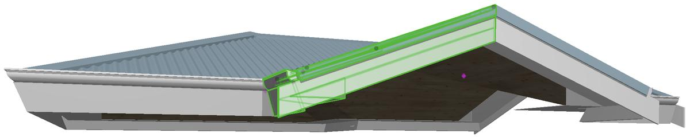
- 打开 Settings（设置）对话框，在 Frieze & Finial（檐饰与顶饰）页面上选择顶饰的设置。
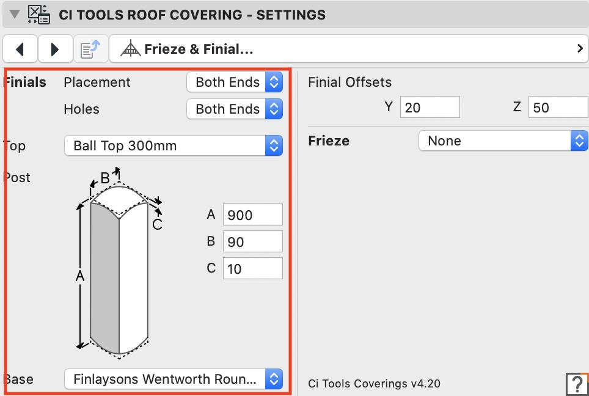
将顶饰的 Placement（布置）设为 Holes to Both Ends（两端开孔）。
- 点击 OK 。此后屋顶覆面对象将在山墙与屋脊相交处生成顶饰。
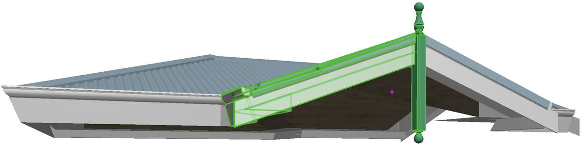
- 现在选择相邻的屋顶覆面。
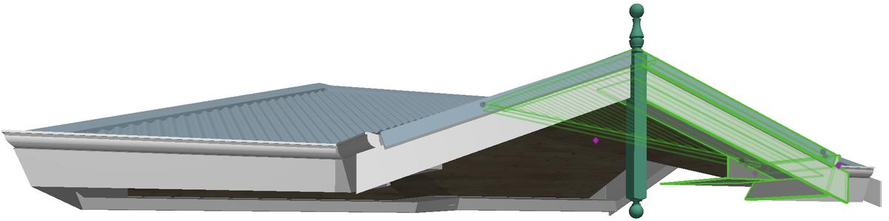
- 打开 Settings 对话框，在 Frieze & Finial 页面上将 Placement 设为 None（无），Holes 设为 Both Ends（两端）。
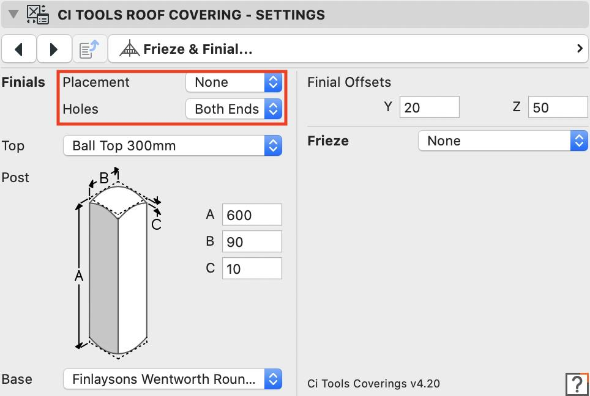
所选屋顶覆面上将开出一个孔，以容纳前面添加的顶饰（步骤 1 - 3）。
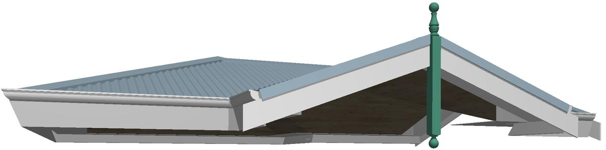
添加檐饰
要添加檐饰：
- 选择构成山墙的两个屋顶覆面，并打开它们的 Settings 对话框。
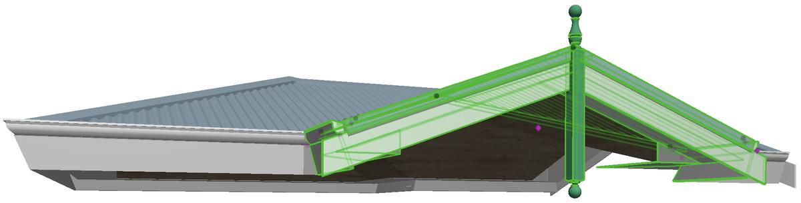
- 在 Frieze & Finial 页面上，选择 Frieze type（檐饰类型），并设置尺寸。
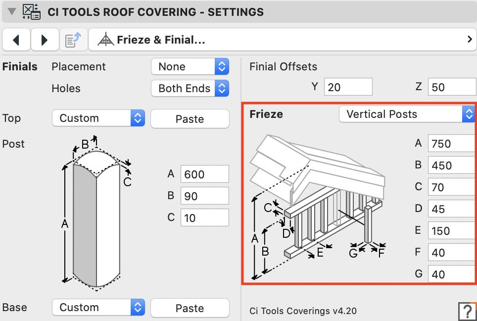
- 点击 OK 应用檐饰。
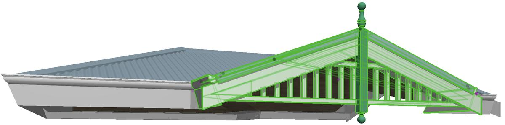
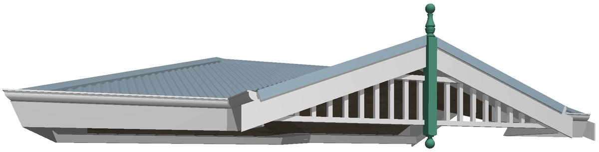
The Ci Tools Roof Covering allows a frieze and/or finial to be added to gables.
Add Finials
To add finials:
- Select one of the roof covering objects.
- Open the Settings dialog, and on the Frieze & Finial page, choose settings for the finial.
Set the finial Placement and Holes to Both Ends .
- Click OK . The roof covering object will now have a finial wherever a gable and ridge intersect.
- Now select the adjacent roof covering.
- Open the Settings dialog, and on the Frieze & Finial page, set Placement to None , and Holes to Both Ends .
A hole will be cut in the the selected roof covering, to allow for the finial we added earlier (steps 1 - 3).
Add a Frieze
To add a frieze:
- Select both roof coverings that form the gable, and open their Settings dialog.
- On the Frieze & Finial page, choose a Frieze type, and set dimensions.
- Click OK to apply the frieze.
英文原文对照Official English Original
The Ci Tools Roof Covering allows a frieze and/or finial to be added to gables.
Add Finials
To add finials:
- Select one of the roof covering objects.
- Open the Settings dialog, and on the Frieze & Finial page, choose settings for the finial.
Set the finial Placement and Holes to Both Ends .
- Click OK . The roof covering object will now have a finial wherever a gable and ridge intersect.
- Now select the adjacent roof covering.
- Open the Settings dialog, and on the Frieze & Finial page, set Placement to None , and Holes to Both Ends .
A hole will be cut in the the selected roof covering, to allow for the finial we added earlier (steps 1 - 3).
Add a Frieze
To add a frieze:
- Select both roof coverings that form the gable, and open their Settings dialog.
- On the Frieze & Finial page, choose a Frieze type, and set dimensions.
- Click OK to apply the frieze.
如何在山墙下方添加墙体挂板
How to Add Wall Cladding under Gables
山墙端部下方的墙体挂板通常直接连接到端部桁架。然而，端部桁架对象很少包含墙体挂板的设置。
Ci Tools Roof Covering 允许在山墙端部下方建模可选的墙体挂板。
- 选择屋顶覆面。
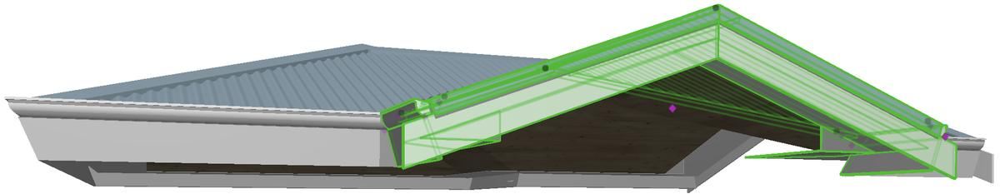
- 打开 Settings 对话框，在 Cladding > Gable End Walls（挂板 > 山墙端墙）页面上选择挂板类型。
- 点击 OK 应用挂板。
- 使用移动热点调整挂板高度。
Wall cladding under gable ends is often attached directly to the end truss. However, end truss objects rarely include settings for wall cladding.
The Ci Tools Roof Covering allows to model an optional wall cladding below gable ends.
- Select the roof coverings.
- Open the Settings dialog, and choose a cladding type on the Cladding > Gable End Walls page.
- Click OK to apply the cladding.
- Use the moving hotspot to adjust the cladding height.
英文原文对照Official English Original
Wall cladding under gable ends is often attached directly to the end truss. However, end truss objects rarely include settings for wall cladding.
The Ci Tools Roof Covering allows to model an optional wall cladding below gable ends.
- Select the roof coverings.
- Open the Settings dialog, and choose a cladding type on the Cladding > Gable End Walls page.
- Click OK to apply the cladding.
- Use the moving hotspot to adjust the cladding height.
如何为屋顶覆面添加自定义檐沟
How to Add a Custom Gutter to a Roof Covering
使用 Archicad 的 Profile Manager（断面管理器）定义檐沟断面，然后将其应用到屋顶覆面。
定义檐沟断面
要定义自定义檐沟断面：
- 在 Profile Manager 中绘制断面形状。位置和方向很重要。锚点应放在绘图原点处，檐沟正面应绘制在原点右侧。
- 从任何需要绘制为敞口的边上移除 Cut Line（裁切线）。
在此示例中，顶部 3 条边应保持敞口，裁切线已从三条边（两条直边和一条曲线边）上移除。
- 保存断面。
现在该断面即可用作自定义檐沟。
将檐沟断面应用到屋顶覆面
- 选择一个或多个覆面，并打开 Settings 对话框。
- 在 Gutter（檐沟）页面上，将 Style（样式）设为 Custom Profile（自定义断面），并选择你上面创建的檐沟断面。
请注意，此时 A 和 B 尺寸将被锁定。檐沟尺寸无法通过参数进行调整。如需更改檐沟尺寸或形状，请在 Profile Manager 中编辑。
- 点击 OK。
Use Archicad's Profile Manager to define a profile for the gutter, then apply it to the roof covering.
Define a Gutter Profile
To define a custom gutter profile:
- Draw the profile shape in the Profile Manager. The position and orientation are important. The anchor point should be placed at the drawing origin, and the gutter front should be drawn to the right of the origin.
- Remove the Cut Line from any edge that should be drawn open.
In this example, the top 3 edges should remain open, the cut line has been removed from three edges (two straight edges and one curved edge).
- Save the profile.
Now the profile is ready for use as a custom gutter.
Apply the Gutter Profile to a Roof Covering
- Select one or more coverings, and open the Settings dialog.
- On the Gutter page, set the Style to Custom Profile, and choose the gutter profile you created above.
Note that the A and B dimensions become locked. The gutter size can't be adjusted parametrically. If you want to change the gutter size or shape, edit it in the Profile Manager.
- Click OK.
英文原文对照Official English Original
Use Archicad's Profile Manager to define a profile for the gutter, then apply it to the roof covering.
Define a Gutter Profile
To define a custom gutter profile:
- Draw the profile shape in the Profile Manager. The position and orientation are important. The anchor point should be placed at the drawing origin, and the gutter front should be drawn to the right of the origin.
- Remove the Cut Line from any edge that should be drawn open.
In this example, the top 3 edges should remain open, the cut line has been removed from three edges (two straight edges and one curved edge).
- Save the profile.
Now the profile is ready for use as a custom gutter.
Apply the Gutter Profile to a Roof Covering
- Select one or more coverings, and open the Settings dialog.
- On the Gutter page, set the Style to Custom Profile, and choose the gutter profile you created above.
Note that the A and B dimensions become locked. The gutter size can't be adjusted parametrically. If you want to change the gutter size or shape, edit it in the Profile Manager.
- Click OK.
如何为墙体添加墙体覆面
How to Add a Wall Covering to a Wall
将 Wall Coverings（墙体覆面）添加到 Archicad Walls（墙体）上，以建模挂板和收边件。
- 在平面视图中选择一个或多个墙体。
- 在 Ci Tools 菜单中，选择 Coverings > Wall Coverings（覆面 > 墙体覆面）。
- 在 Configuration（配置）页面上，选择挂板的排列方式。
- 在 Claddings（挂板）页面上，选择挂板类型与尺寸。
- 点击 OK 。
- 点击以指定覆面要应用到墙体的哪个面（根据所选项，你可能需要点击多次）。
Add Wall Coverings to Archicad Walls, to model cladding and trims.
- Select one or more walls in plan view.
- From the Ci Tools menu, choose Coverings > Wall Coverings .
- On the Configuration page, choose how the claddings should be arranged.
- On the Claddings page, choose cladding type and dimensions.
- Click OK .
- Click to indicate the face of the wall to which the covering should be applied (depending on the selection, you may be prompted to click multiple times).
英文原文对照Official English Original
Add Wall Coverings to Archicad Walls, to model cladding and trims.
- Select one or more walls in plan view.
- From the Ci Tools menu, choose Coverings > Wall Coverings .
- On the Configuration page, choose how the claddings should be arranged.
- On the Claddings page, choose cladding type and dimensions.
- Click OK .
- Click to indicate the face of the wall to which the covering should be applied (depending on the selection, you may be prompted to click multiple times).
如何调整屋顶覆面的边角度
How to Adjust Roof Covering Edge Angles
Archicad Roof（屋顶）的每条边都可以是垂直的、垂直于屋面的，或设置为自定义角度。
这些屋顶角度也可应用到关联的 Roof Covering（屋顶覆面）上。
- 选择一个 Roof Covering（屋顶覆面），并打开其 Settings 对话框。
- 在 Configuration 页面上，将 Roof Polygon Edges > Angles（屋顶多边形边 > 角度）设为 Match Roof Edges（匹配屋顶边）。屋顶覆面将采用屋顶的边角度。
在建模不对称屋顶（不同坡度的屋面在屋脊线处相交）时，这尤其有用。
它同样适用于方形收头椽（square stopped rafter）构造。
Each edge of an Archicad Roof can be either vertical, perpendicular to the roof surface, or set at a custom angle.
These roof angles can also be applied to the associated Roof Covering.
- Select a Roof Covering , and open its Settings dialog.
- On the Configuration page, set Roof Polygon Edges > Angles to Match Roof Edges . The roof covering will take the edge angles of the roof.
This is particularly useful when modelling an asymmetric roof, where roofs of different pitch meet at a ridge line.
It can also be useful for square stopped rafter construction.
英文原文对照Official English Original
Each edge of an Archicad Roof can be either vertical, perpendicular to the roof surface, or set at a custom angle.
These roof angles can also be applied to the associated Roof Covering.
- Select a Roof Covering , and open its Settings dialog.
- On the Configuration page, set Roof Polygon Edges > Angles to Match Roof Edges . The roof covering will take the edge angles of the roof.
This is particularly useful when modelling an asymmetric roof, where roofs of different pitch meet at a ridge line.
It can also be useful for square stopped rafter construction.
如何对齐不同屋面上的挂板
How to Align Claddings on Different Roof Planes
当你将覆面附着到多坡屋顶后，相邻的挂板可能未对齐。
你可以调整肋式或瓦式挂板的放样起点。
- 在平面视图中选择屋顶覆面。你会看到每个覆面上都有一个紫色热点，它标示挂板断面的原点。
- 移动热点以调整挂板原点。请注意，该热点同时控制檩条/挂瓦条的放样。
现在挂板将在平面视图和模型视图中对齐。
Once you've attached coverings to a multi-plane roof, adjacent claddings may not be aligned.
You can adjust the setout point for ribbed or tiled claddings.
- Select the roof coverings in plan view. You'll see a purple hotspot on each covering. This marks the origin of the cladding profile.
- Move the hotspot to adjust the cladding origin. Note that this hotspot also controls the setout for purlins/battens.
The claddings will now align in plan view and in model views.
英文原文对照Official English Original
Once you've attached coverings to a multi-plane roof, adjacent claddings may not be aligned.
You can adjust the setout point for ribbed or tiled claddings.
- Select the roof coverings in plan view. You'll see a purple hotspot on each covering. This marks the origin of the cladding profile.
- Move the hotspot to adjust the cladding origin. Note that this hotspot also controls the setout for purlins/battens.
The claddings will now align in plan view and in model views.
如何更改屋顶覆面的边类型
How to Change Roof Covering Edge Types
当你首次将 Roof Covering（屋顶覆面）放置到 Archicad Roof（屋顶）上时，默认边类型会根据 Configuration（配置）页面上所选的屋顶类型自动指定。
例如，如果你选择 Hip/Gable（四坡/山墙）类型屋顶：
- 所有平行于屋面坡向线、位于屋面下端的边，都将作为檐沟处理（自动添加封檐板、封檐底面和檐沟）。
- 所有平行于屋面坡向线、位于屋面上端的边，都将作为屋脊交接处理（自动添加泛水）。
- 所有垂直于屋面坡向线的边，都将作为山墙处理（自动添加博风板和封檐底面）。
- 所有构成四坡（hip）的边，都将作为四坡交接处理（自动添加四坡泛水）。
- 所有构成天沟（valley）的边，都将作为天沟交接处理（自动添加天沟泛水）。
要编辑屋顶覆面的单条边：
- 在任意项目视图中选择一个或多个屋顶覆面。
- 在 Ci Tools 菜单中，选择 Coverings > Edit Roof Edges（覆面 > 编辑屋檐边）。
- 选择一条或多条边：
要选中一条边，请在该边上双击。
- 点击时按住 Ctrl（Mac 上为 Command）键可选择多条边。
- 在某个屋顶多边形内点击可选择该多边形的全部边。
- 使用魔棒按钮可选择某一特定类型的所有边。
- 为所选范围选择边类型。
- 点击 OK 。
When you initially place a Roof Covering onto an Archicad Roof, default edge types are assigned based on the type of roof selected on the Configuration page.
For instance, if you choose a Hip/Gable type roof:
- All edges running parallel to the roof pitching line, at the lower end of the roof, will be treated as gutters (with fascia boards, soffits and gutters added).
- All edges running parallel to the roof pitching line, at the upper end of the roof, will be treated as ridge junctions (with flashings added).
- All edges running perpendicular to the roof pitching line, will be treated as gables (with barge boards and soffits added).
- All edges forming hips will be treated as hip junctions (with hip flashings added).
- All edges forming valleys will be treated as valley junctions (with valley flashings added).
To edit individual edges of the roof covering:
- Select one or more roof coverings in any project view.
- From the Ci Tools menu, choose Coverings > Edit Roof Edges .
- Select one or more edges:
To select an edge, double-click on that edge.
- Use the control (command) key while clicking, to select multiple edges.
- Click within a roof polygon to select all edges of that polygon.
- Use the magic wand button to select all edges of a particular type.
- Choose an edge type for the selection.
- Click OK .
英文原文对照Official English Original
When you initially place a Roof Covering onto an Archicad Roof, default edge types are assigned based on the type of roof selected on the Configuration page.
For instance, if you choose a Hip/Gable type roof:
- All edges running parallel to the roof pitching line, at the lower end of the roof, will be treated as gutters (with fascia boards, soffits and gutters added).
- All edges running parallel to the roof pitching line, at the upper end of the roof, will be treated as ridge junctions (with flashings added).
- All edges running perpendicular to the roof pitching line, will be treated as gables (with barge boards and soffits added).
- All edges forming hips will be treated as hip junctions (with hip flashings added).
- All edges forming valleys will be treated as valley junctions (with valley flashings added).
To edit individual edges of the roof covering:
- Select one or more roof coverings in any project view.
- From the Ci Tools menu, choose Coverings > Edit Roof Edges .
- Select one or more edges:
To select an edge, double-click on that edge.
- Use the control (command) key while clicking, to select multiple edges.
- Click within a roof polygon to select all edges of that polygon.
- Use the magic wand button to select all edges of a particular type.
- Choose an edge type for the selection.
- Click OK .
如何在模型视图中控制屋顶覆面的细部
How to Control Roof Covering Details in Model Views
屋顶覆面由若干组成部分构成：
- 挂板（Cladding）
- 框架（即檩条或挂瓦条）
- 泛水
- 边板（即封檐板和博风板）
- 封檐底面
- 檐沟
- 落水管
- 山墙端挂板
- 檐饰（Frieze）与顶饰（Finial）
在任一给定视图中，你可能希望显示全部或仅显示其中一部分组成部分。例如，在平面视图中通常没必要显示边板或框架；在三维视图中显示框架也可能没有帮助。
Ci Tools Coverings 库的 Model View Options（MVO，模型视图选项）设置提供了控制显示/隐藏各组成部分的选项。
还有一个通用控制项，可将屋顶覆面以通用模式或详细模式绘制。通用模式可减少多边形数量，因此除出图视图外都适合使用。
出于迁移目的，你可以选择覆盖平面图的 MVO 设置。此时框架不显示，各组成部分的可见性由 Settings 对话框中 Display Options > Symbol（显示选项 > 符号）下的设置控制。
Roof coverings are made up of several components:
- Cladding
- Framing (i.e. purlins or battens)
- Flashings
- Edge boards (i.e. fascias and barge boards)
- Soffits
- Gutters
- Downpipes
- Gable end cladding
- Frieze & finial
In any given view, you may want to display all or only a subset of these components. For instance, in a plan view it's usually not helpful to display edge boards or framing. In a 3D view it may also be unhelpful to display framing.
The Model View Options (MVO) settings for the Ci Tools Coverings library provide controls to show/hide each of these components.
There's also a general control to draw the roof covering in a generic or detailed mode. The generic mode reduces the polygon count, so it's a good option for all but presentation views.
For migration purposes, you can choose to override the MVO settings for plan view. In this case the framing is not shown, and visibility of components is controlled in the Settings dialog under Display Options > Symbol.
英文原文对照Official English Original
Roof coverings are made up of several components:
- Cladding
- Framing (i.e. purlins or battens)
- Flashings
- Edge boards (i.e. fascias and barge boards)
- Soffits
- Gutters
- Downpipes
- Gable end cladding
- Frieze & finial
In any given view, you may want to display all or only a subset of these components. For instance, in a plan view it's usually not helpful to display edge boards or framing. In a 3D view it may also be unhelpful to display framing.
The Model View Options (MVO) settings for the Ci Tools Coverings library provide controls to show/hide each of these components.
There's also a general control to draw the roof covering in a generic or detailed mode. The generic mode reduces the polygon count, so it's a good option for all but presentation views.
For migration purposes, you can choose to override the MVO settings for plan view. In this case the framing is not shown, and visibility of components is controlled in the Settings dialog under Display Options > Symbol.
如何显示屋顶坡度与面积
How to Display Roof Pitch and Area
使用 Ci Roof Covering Label（Ci 屋顶覆面标签）显示屋顶坡度以及可选的面积。
在平面视图中为屋顶覆面添加标签
- 打开默认的 Label Settings（标签设置）对话框，选择 Ci Roof Pitch Label（Ci 屋顶坡度标签）。
将标签设置为无指示线放置，然后点击 OK。
- 在 Info Box（信息框）中，将标签的 Geometry Method（几何方法）设为 Associative（关联式）。
- 在平面视图中，点击将标签放置到屋顶覆面上。
标签会以正确的方向放置，并显示坡度角和屋顶面积。
- 点击将标签放置到其他屋面上。
更改箭头尺寸
如果你想更改箭头尺寸：
- 在平面视图中选择标签。
- 打开它们的 Settings 对话框。
- 将 Arrow（箭头）设为 Custom Size（自定义尺寸），并设置 Arrowhead Size（箭头尺寸）。
移除屋顶面积文字
如果你只想显示屋顶坡度：
- 转到 Document（文档）菜单，选择 Model View > Model View Options（模型视图 > 模型视图选项）。
- 打开 Ci Coverings 选项卡。
- 将 Roof > Label > Show Area（屋顶 > 标签 > 显示面积）设置为 Off（关闭）。
在平面视图中，标签将更新为仅显示屋顶坡度。
在剖面/立面视图中为屋顶覆面添加标签
在 Section/Elevation（剖面/立面）视图中，使用同一标签来标示屋顶坡度。
- 打开默认的 Label Settings 对话框，选择 Ci Roof Pitch Label。将标签设置为无指示线放置，然后点击 OK。
- 在 Info Box 中，将标签的 Geometry Method 设为 Associative。
- 在剖面/立面视图中，点击将标签放置到屋顶覆面上。
标签会被放置在距你点击处一定距离的位置。
- 将标签拖动到所需位置。
%%IMG13%%
Use the Ci Roof Covering Label to display the roof pitch and optional area.
Label Roof Coverings in Plan View
- Open the default Label Settings dialog, and select the Ci Roof Pitch Label.
Set the label to place with no pointer, and click OK.
- In the Info Box, set the label Geometry Method to Associative.
- In plan view, click to place the label onto a roof covering.
The label is placed at the correct orientation, and displays the pitch angle and roof area.
- Click to place labels onto other roof planes.
Change the Arrowhead Size
If you want to change the arrowhead size:
- Select the labels in plan view.
- Open their Settings dialog.
- Set the Arrow to have Custom Size, and set the Arrowhead Size.
Remove the Roof Area Text
If you want to display the roof pitch only:
- Go to the Document menu and choose Model View > Model View Options.
- Open the Ci Coverings tab.
- Set the Roof > Label > Show Area setting to Off.
In plan view, the labels will update to display the roof pitch only.
Label Roof Coverings in Section/Elevation Views
In Section/Elevation views, use the same label to indicate the roof pitch.
- Open the default Label Settings dialog, and select the Ci Roof Pitch Label. Set the label to place with no pointer, and click OK.
- In the Info Box, set the label Geometry Method to Associative.
- In section/elevation view, click to place the label onto a roof covering.
The label will be placed at some distance from the point you clicked.
- Drag the label to the desired location.
%%IMG13%%
英文原文对照Official English Original
Use the Ci Roof Covering Label to display the roof pitch and optional area.
Label Roof Coverings in Plan View
- Open the default Label Settings dialog, and select the Ci Roof Pitch Label.
Set the label to place with no pointer, and click OK.
- In the Info Box, set the label Geometry Method to Associative.
- In plan view, click to place the label onto a roof covering.
The label is placed at the correct orientation, and displays the pitch angle and roof area.
- Click to place labels onto other roof planes.
Change the Arrowhead Size
If you want to change the arrowhead size:
- Select the labels in plan view.
- Open their Settings dialog.
- Set the Arrow to have Custom Size, and set the Arrowhead Size.
Remove the Roof Area Text
If you want to display the roof pitch only:
- Go to the Document menu and choose Model View > Model View Options.
- Open the Ci Coverings tab.
- Set the Roof > Label > Show Area setting to Off.
In plan view, the labels will update to display the roof pitch only.
Label Roof Coverings in Section/Elevation Views
In Section/Elevation views, use the same label to indicate the roof pitch.
- Open the default Label Settings dialog, and select the Ci Roof Pitch Label. Set the label to place with no pointer, and click OK.
- In the Info Box, set the label Geometry Method to Associative.
- In section/elevation view, click to place the label onto a roof covering.
The label will be placed at some distance from the point you clicked.
- Drag the label to the desired location.
%%IMG13%%
如何制作自定义顶饰
How to Make a Custom Finial
在 Archicad Toolbox（工具箱）中双击 Object（对象）工具，然后浏览 Coverings 库以选择 Cadimage Finial Designer 对象。你可以使用该对象为 Ci Tools Roof Covering 的顶饰设计自定义的顶部尖顶（Top Spindle）或底部尖顶（Bottom Spindle）。
在 Post（柱身）页面上，设置顶饰柱身的尺寸。此项仅用于可视化显示。
设计自定义顶部尖顶
使用 Top Spindle（顶部尖顶）页面上的控件设计自定义顶部尖顶：
- 将 Style（样式）设为 Custom Settings（自定义设置），并使用 Components（组件）控件添加和移除尖顶的组件、设置每个组件的尺寸，以及上下移动组件。
- 从列表中选择一个组件以编辑其设置。
点击 + 和 - 按钮复制或移除该组件。
- 点击箭头按钮将组件上移或下移。
- 点击 Copy（复制）按钮创建顶部尖顶的临时副本。
设计自定义底部尖顶
在 Bottom Spindle（底部尖顶）页面上，定义自定义的底部尖顶：
- 使用列表选择组件。
- 使用 + 按钮复制组件，或使用 - 按钮移除组件。
- 使用箭头按钮将组件上移或下移。
- 点击 Copy（复制）按钮创建底部尖顶的临时副本。
使用自定义顶部和底部尖顶
要将自定义顶部和底部尖顶应用到屋顶覆面：
- 按上述方式设计顶部和底部尖顶，并分别为每个尖顶点击 Copy 按钮以创建临时副本。
- 在 Ci Tools Roof Covering 对象中，为顶部和底部尖顶选择 Custom（自定义），然后点击 Paste（粘贴）按钮以粘贴上一步中保存的设置。
Double-click on the Object tool in the Archicad Toolbox, and browse the Coverings library to select the Cadimage Finial Designer object. You can use this object to design a customTop Spindleor Bottom Spindle for use by the finial in the Ci Tools Roof Covering.
On the Post page, set the dimensions of the finial post. This is only used for visualization.
Design a Custom Top Spindle
Use the controls on the Top Spindle page to design a custom top spindle:
- Set the Style to Custom Settings, and use the Components controls to add and remove components from the spindle, set the dimensions of each component, and move the components up or down.
- Select a component from the list to edit its settings.
Click the + and - buttons to duplicate or remove the component.
- Click the arrow buttons to move the component up or down.
- Click on the Copy button to make a temporary copy of the top spindle.
Design a Custom Bottom Spindle
On the Bottom Spindle page, define a custom bottom spindle:
- Use the list to select a component.
- Use the + button to duplicate the component, or the - button to remove the component.
- Use the arrow buttons to move the component up or down.
- Click on the Copy button to make a temporary copy of the bottom spindle.
Use the Custom Top and Bottom Spindles
To apply the custom top and bottom spindles to a roof covering:
- Design the top and bottom spindles as above, and click the Copy button for each to make a temporary copy.
- In the Ci Tools Roof Covering object, choose Custom for the top and bottom spindles, and click the Paste button to paste the settings you stored in the previous step.
英文原文对照Official English Original
Double-click on the Object tool in the Archicad Toolbox, and browse the Coverings library to select the Cadimage Finial Designer object. You can use this object to design a customTop Spindleor Bottom Spindle for use by the finial in the Ci Tools Roof Covering.
On the Post page, set the dimensions of the finial post. This is only used for visualization.
Design a Custom Top Spindle
Use the controls on the Top Spindle page to design a custom top spindle:
- Set the Style to Custom Settings, and use the Components controls to add and remove components from the spindle, set the dimensions of each component, and move the components up or down.
- Select a component from the list to edit its settings.
Click the + and - buttons to duplicate or remove the component.
- Click the arrow buttons to move the component up or down.
- Click on the Copy button to make a temporary copy of the top spindle.
Design a Custom Bottom Spindle
On the Bottom Spindle page, define a custom bottom spindle:
- Use the list to select a component.
- Use the + button to duplicate the component, or the - button to remove the component.
- Use the arrow buttons to move the component up or down.
- Click on the Copy button to make a temporary copy of the bottom spindle.
Use the Custom Top and Bottom Spindles
To apply the custom top and bottom spindles to a roof covering:
- Design the top and bottom spindles as above, and click the Copy button for each to make a temporary copy.
- In the Ci Tools Roof Covering object, choose Custom for the top and bottom spindles, and click the Paste button to paste the settings you stored in the previous step.
如何将覆面放置到屋顶上
How to Place a Covering onto a Roof
在平面视图中，选择你想要覆盖的屋顶。
从 Ci Tools 菜单中，选择 Coverings > Roof Covering（覆面 > 屋顶覆面）。
Roof Covering Settings（屋顶覆面设置）对话框将弹出。
在 Configuration（配置）页面上，为覆面几何体选择一些基本设置。
在 Cladding（挂板）页面上，选择要应用到屋顶的挂板类型。
在 Edge Boards（边板）页面上，设置封檐板、博风板和屋脊板的尺寸。
在 Gutters（檐沟）页面上，选择檐沟断面。
点击 OK。每个屋顶多边形都将应用一个屋顶覆面。
三维模型与平面图符号一致。
In plan view, select the roof that you want to cover.
From the Ci Tools menu, choose Coverings > Roof Covering.
TheRoof Covering Settings dialog will come up.
On the Configuration page, choose some basic settings for the covering geometry.
On the Cladding page, choose the type of cladding you want to apply to the roof.
On the Edge Boards page, set the dimensions of the fascia, barge and ridge boards.
On the Gutters page, choose a gutter profile.
Click OK. A roof covering will be applied to each roof polygon.
The 3D model matches the plan view symbol.
英文原文对照Official English Original
In plan view, select the roof that you want to cover.
From the Ci Tools menu, choose Coverings > Roof Covering.
TheRoof Covering Settings dialog will come up.
On the Configuration page, choose some basic settings for the covering geometry.
On the Cladding page, choose the type of cladding you want to apply to the roof.
On the Edge Boards page, set the dimensions of the fascia, barge and ridge boards.
On the Gutters page, choose a gutter profile.
Click OK. A roof covering will be applied to each roof polygon.
The 3D model matches the plan view symbol.
如何为木平台添加边板
How to add Edge Boards to a Timber Deck
如果你使用 Cadimage Coverings 工具创建木平台，你会注意到边缘未做收边（如下图）。这样你可以选择哪些边（如果有）需要收边。
要为已应用铺板的楼板周边添加边板，你需要为每条边开启 'Edge Board'（边板）条件：
- 在二维平面视图中选择楼板对象
你会注意到每条边的中点出现热点（如下图）。每个热点都允许你设置 'Edge Board' 条件（'On' 开启或 'Off' 关闭）：
- 点击其中一个热点
- 将鼠标朝向平台中心移动
你应当会看到预览线出现，同时 Tracker（追踪器）中显示 'Full Board'（整板）信息：
- 一旦看到 'Full Board' 信息，点击以添加边板。
提示：如果你把鼠标停留在热点上或从铺板上移开，你会在 Tracker 中看到 No Edge Board（无边板）信息：
为每条边添加边板后，你的平台应当类似于这样：
If you use the Cadimage Coverings tool to create a timber deck, you'll notice that the edges are left unfinished (like in the image below). This lets you choose which (if any) edges have a finish.
To apply an edge around a Slab with Decking applied you'll need to turn on the 'Edge Board' condition for each edge:
1.Select the slab object in your 2D plan view
You'll notice hotspots appear at the midpoint of each edge (as shown below). Each hotspot allows you to set the 'Edge Board' condition (either 'On' or 'Off'):
- Click on one of these hotspots
- Move your mouse toward the center of the deck
You should see a preview line appear along with the 'Full Board' message in the Tracker:
- Once you see the 'Full Board' message, click to add the Edge Board.
TIP: If you leave the mouse on the hotspot or move away from the decking you will see the No Edge Board message appear in the Tracker:
After adding Edge Boards to each edge, your deck should look similar to this:
英文原文对照Official English Original
If you use the Cadimage Coverings tool to create a timber deck, you'll notice that the edges are left unfinished (like in the image below). This lets you choose which (if any) edges have a finish.
To apply an edge around a Slab with Decking applied you'll need to turn on the 'Edge Board' condition for each edge:
1.Select the slab object in your 2D plan view
You'll notice hotspots appear at the midpoint of each edge (as shown below). Each hotspot allows you to set the 'Edge Board' condition (either 'On' or 'Off'):
- Click on one of these hotspots
- Move your mouse toward the center of the deck
You should see a preview line appear along with the 'Full Board' message in the Tracker:
- Once you see the 'Full Board' message, click to add the Edge Board.
TIP: If you leave the mouse on the hotspot or move away from the decking you will see the No Edge Board message appear in the Tracker:
After adding Edge Boards to each edge, your deck should look similar to this:
如何为楼板添加覆面
How to add a Covering to a Slab
使用 Cadimage Covering 工具，你可以为 ARCHICAD 楼板应用两种类型的覆面，分别是：
- 铺板（Decking）
- 预制楼板（Pre-Cast Slab）
要应用其中任一种覆面类型：
- 在平面视图中选择任意楼板
- 转到 Cadimage > Coverings > Slab Coverings...（Cadimage > 覆面 > 楼板覆面）
**
**
- 在出现的对话框中，选择要添加的覆面类型（Decking 铺板或 Pre-Cast Slab 预制楼板）：
- 从菜单下拉列表的 Configuration（配置）页面编辑覆面设置：
- 点击 OK 关闭对话框并将设置应用到你的楼板。
Using the Cadimage Covering Tool you can apply two kinds of covering to your ARCHICAD slab, which are:
- Decking
- Pre-Cast Slab
To apply either of these Covering types:
- Select any Slab in plan view
- Go to Cadimage > Coverings > Slab Coverings...
**
**
- In the dialogue that appears, choose the type of Covering that you want to add (either Decking or Pre-Cast Slab):
- Edit the Covering settings in the Configuration page from the menu Drop-down:
- Click OK to close the dialogue and apply the settings to your Slab.
英文原文对照Official English Original
Using the Cadimage Covering Tool you can apply two kinds of covering to your ARCHICAD slab, which are:
- Decking
- Pre-Cast Slab
To apply either of these Covering types:
- Select any Slab in plan view
- Go to Cadimage > Coverings > Slab Coverings...
**
**
- In the dialogue that appears, choose the type of Covering that you want to add (either Decking or Pre-Cast Slab):
- Edit the Covering settings in the Configuration page from the menu Drop-down:
- Click OK to close the dialogue and apply the settings to your Slab.
如何为柱添加凹槽
How to add a Flute to a Column
下面是已应用柱身包覆的柱的示例。
要为柱添加包覆：
- 转到你的平面视图（Plan View）
- 选择柱
- 转到 Cadimage > Coverings > Column Coverings...（Cadimage > 覆面 > 柱身覆面）
**
**
- 选择 Cadimage Column Fluting Object（Cadimage 柱身凹槽对象）：
- 在 Configuration（配置）下，你应当可以根据想要的效果更改设置。
- 点击菜单下拉列表转到 Attributes（属性），在那里你可以更改柱身覆面的表面和其他属性
**
**
- 点击 OK 放置柱身包覆。
Below is an example of a column which has a Column Wrap applied.
To add a Wrap to a Column:
- Go to yourPlan View
- Select the column(s)
- Go to Cadimage > Coverings > Column Coverings...
**
**
- Select the Cadimage Column Fluting Object:
- Under Configuration, you should be able to change the settings according to the results you are after.
- Click on the Menu drop-down to go to Attributes where you can change the Column covering Surfaces and other attributes
**
**
- Click OK to place the Column Wrapping.
英文原文对照Official English Original
Below is an example of a column which has a Column Wrap applied.
To add a Wrap to a Column:
- Go to yourPlan View
- Select the column(s)
- Go to Cadimage > Coverings > Column Coverings...
**
**
- Select the Cadimage Column Fluting Object:
- Under Configuration, you should be able to change the settings according to the results you are after.
- Click on the Menu drop-down to go to Attributes where you can change the Column covering Surfaces and other attributes
**
**
- Click OK to place the Column Wrapping.
如何为柱添加柱脚
How to add a Footing to a Column
你可以使用 Cadimage Coverings 工具为你的柱添加圆形或矩形柱脚。结果将类似于下图（取决于你的设置）：
要为你的柱添加柱脚：
- 转到你的平面视图（Plan View）
- 选择你的柱
- 转到 Cadimage > Coverings > Column Coverings（Cadimage > 覆面 > 柱身覆面）
**
**
- 选择 Cadimage Column Footing（Cadimage 柱脚）项：
- 现在你应该能在对话框右侧看到 Cadimage Footing Settings（Cadimage 柱脚设置）区域
- 选择你的 柱脚设置（Rectangular 矩形或 Round 圆形），如下图所示：
在此示例中我们选择了 Round（圆形）选项。
- 应用柱脚尺寸设置。
- 在菜单下拉列表中选择 Attribute（属性）选项，以在 Cadimage 对话框中更改表面和其他属性：
- 点击 OK 应用柱脚
You can add a round or rectangular footing your column using the Cadimage Coverings Tool. The result will look similar to the image below (depending on your settings):
To add a Footing to your column:
- Go to your Plan View
- Select your column
- Go to Cadimage > Coverings > Column Coverings
**
**
4.SelecttheCadimage Column Footing item:
- You should now see the Cadimage Footing Settings area on the right side of the dialogue
- Choose your Footing settings (either Rectangular or Round) as shown below:
In this example we have chosen the Round option.
- Apply the Footing size settings.
- Select the Attribute option on the menu drop-down to change the Surfaces and other attributes. in the Cadimage dialogue:
- Click OK to apply the Column Footing
英文原文对照Official English Original
You can add a round or rectangular footing your column using the Cadimage Coverings Tool. The result will look similar to the image below (depending on your settings):
To add a Footing to your column:
- Go to your Plan View
- Select your column
- Go to Cadimage > Coverings > Column Coverings
**
**
4.SelecttheCadimage Column Footing item:
- You should now see the Cadimage Footing Settings area on the right side of the dialogue
- Choose your Footing settings (either Rectangular or Round) as shown below:
In this example we have chosen the Round option.
- Apply the Footing size settings.
- Select the Attribute option on the menu drop-down to change the Surfaces and other attributes. in the Cadimage dialogue:
- Click OK to apply the Column Footing
如何添加屋顶覆面
How to add a Roof Covering
本文介绍如何为我们的立缝金属屋面应用覆面，最终效果如下所示：
- 转到你的 平面视图（Plan View）
- 选择你的屋顶（或屋顶构件，因为覆面工具同时支持单坡面和多坡面屋顶类型）
- 转到 Cadimage > Coverings > Roof Coverings...（Cadimage > 覆面 > 屋顶覆面）
**
**
- 现在你应该能看到 Cadimage Roof Covering Settings（Cadimage 屋顶覆面设置）对话框（如下图所示）：
点击菜单下拉箭头，你会看到所有可用的界面页面。
提示：如果对话框中的文本字段显示为灰色且无法编辑，这是因为正在使用 Preset（预设）。要激活设置并使其可编辑，请点击对话框左下角的 Use Custom Setting button（使用自定义设置按钮）。
- 点击下拉菜单中的不同选项以访问不同页面：
你可以开始设置挂板类型、框架选项、板材尺寸、檐沟样式等
- 选择 Attributes（属性）以更改表面：
- 现在你可以点击 OK 退出并应用设置。
In this article we show you how to apply a Covering to our standing seam roof, with the final result shown below:
- Go to your Plan View
- Select your Roof (or Roof components, as the Coverings Tool works with both single-plane and multi-plane Roof types)
- Go to Cadimage > Coverings > Roof Coverings...
**
**
- You should now see the Cadimage Roof Covering Settings dialogue box (shown below):
By clicking on the menu drop down, you will see all the available interface pages.
TIP: If the text fields in the dialogue appear to be greyed out and non-editable, this will be because a Preset is being used. To activate the settings and make them editable, click on Use Custom Setting button at the bottom left of the dialogue.
- Click on the different options on the drop down menu to access the different pages:
You can start setting the Cladding type, framing options, board dimensions, gutter style, etc
8.Choose Attributes to change Surfaces:
- You can now click OK to exit to apply the settings.
英文原文对照Official English Original
In this article we show you how to apply a Covering to our standing seam roof, with the final result shown below:
- Go to your Plan View
- Select your Roof (or Roof components, as the Coverings Tool works with both single-plane and multi-plane Roof types)
- Go to Cadimage > Coverings > Roof Coverings...
**
**
- You should now see the Cadimage Roof Covering Settings dialogue box (shown below):
By clicking on the menu drop down, you will see all the available interface pages.
TIP: If the text fields in the dialogue appear to be greyed out and non-editable, this will be because a Preset is being used. To activate the settings and make them editable, click on Use Custom Setting button at the bottom left of the dialogue.
- Click on the different options on the drop down menu to access the different pages:
You can start setting the Cladding type, framing options, board dimensions, gutter style, etc
8.Choose Attributes to change Surfaces:
- You can now click OK to exit to apply the settings.
如何为柱添加包覆
How to add a Wrap to a Column
- 转到平面视图（Plan View）
- 选择你的柱
- 转到 Cadimage > Coverings > Column Coverings…（Cadimage > 覆面 > 柱身覆面）
- 选择 Cadimage Column Wrap（Cadimage 柱身包覆）对象：
- 在菜单下拉列表中选择 Configuration（配置）以修改设置：
- 要更改 Wrap Attributes（包覆属性），从菜单下拉列表中选择 Attributes：
- 点击 OK 应用柱身包覆。
- Go toPlan View
- Select your column(s)
- Go to Cadimage> Coverings> Column Coverings…
- Select the Cadimage Column Wrap object:
- Select Configuration on the menu drop down to modify the settings:
- To change the Wrap Attributes, select Attributes from the menu drop-down:
- Click OK to apply the Column Wrap.
英文原文对照Official English Original
- Go toPlan View
- Select your column(s)
- Go to Cadimage> Coverings> Column Coverings…
- Select the Cadimage Column Wrap object:
- Select Configuration on the menu drop down to modify the settings:
- To change the Wrap Attributes, select Attributes from the menu drop-down:
- Click OK to apply the Column Wrap.
如何更改铺板的原点和方向
How to change the Origin and Orientation of Decking Boards
当你将 Cadimage Coverings 的铺板应用到楼板时，你会注意到铺板是从楼板中心放样布置的，并且平行于其最长边，样式如下：
要更改板材的方向以及原点：
- 转到你的平面视图（Plan view）
- 选择铺板
- 你会看到一个大箭头，如下图所示：
箭头指示铺板的原点（上图第 1 项）和方向（上图第 2 项）。
要移动原点：
- 点击箭头的起点（上图中的第 1 项）
- 将箭头起点移动到你想要的原点位置（此处我们使用开洞的角点）：
- 你应当会注意到板材已更新并反映出新原点的位置
要更改板材的方向：
- 点击箭头头部
- 旋转箭头至所需角度
你会看到铺板线条更新，显示新的角度和位置：
本示例中所用平台更新后的渲染效果如下：
When you apply the Cadimage Coverings Decking to a slab, you'll notice that the decking is set out from the center of the Slab, and oriented parallel to its longest edge, just like this:
To change the orientation of the boards as well as the origin:
- Go to your Plan view
2.Select the Decking
- You will see alarge arrow as shown below:
The arrow indicates the origin (item #1 above) and orientation(item #2 above) of the decking.
To move the Origin:
- Click on the start of the arrow (item #1 in the image above)
- Move the start of the arrow to your desired Origin point (here we will use the corner of the cut out):
- You should notice the boards update to show reflect the position of the new Origin point
To change the Orientation of the boards:
- Click on the arrow head
8.Rotate the arrow to the angle you require
You will see the decking lines update, showing the new angle and positioning:
The updated render of the deck used in this example looks like this:
英文原文对照Official English Original
When you apply the Cadimage Coverings Decking to a slab, you'll notice that the decking is set out from the center of the Slab, and oriented parallel to its longest edge, just like this:
To change the orientation of the boards as well as the origin:
- Go to your Plan view
2.Select the Decking
- You will see alarge arrow as shown below:
The arrow indicates the origin (item #1 above) and orientation(item #2 above) of the decking.
To move the Origin:
- Click on the start of the arrow (item #1 in the image above)
- Move the start of the arrow to your desired Origin point (here we will use the corner of the cut out):
- You should notice the boards update to show reflect the position of the new Origin point
To change the Orientation of the boards:
- Click on the arrow head
8.Rotate the arrow to the angle you require
You will see the decking lines update, showing the new angle and positioning:
The updated render of the deck used in this example looks like this:
如何设置封檐板与博风板的尺寸
How to set Fascia and Barge Board Dimensions
在 Roof Covering（屋顶覆面）的 Settings（设置）对话框中的 Edge Boards（边板）下，设置封檐板和博风板的厚度、宽度与偏移量。
如果所有边板都是垂直的，你可以直接输入尺寸。但如果边板各自处于不同角度，你可能需要考虑如何最好地表达它们。
要绘制非垂直的边板，你需先在 Settings 对话框的 Configuration（配置）页面上，将 Roof Polygon Edges > Angles（屋顶多边形边 > 角度）设为 Match Roof Edges（匹配屋顶边）。
完成后，在 Edge Boards 页面上，你可以将 Board Width（板材宽度）设置为以下选项之一：
- Measure vertically（垂直测量）
- Measure perpendicular to the roof surface（垂直于屋面测量）
- As entered（按输入值）
- Roof thickness + framing（屋面厚度 + 框架）
若希望所有封檐板和博风板无论与屋面成何种角度都保持你输入的完全相同宽度，请选择 As entered。这可能导致两块边板交接处出现错位。
若大多数板材是垂直的，仅少数与屋面成不同角度，请选择 Measure vertically。此时非垂直板材的宽度将被调整，以便在视觉上与其他板材一致。
若大多数板材与屋面垂直，请选择 Measure perpendicular to roof surface。此时非垂直板材的宽度将被调整，以便在视觉上与其他板材一致。
若希望封檐板与屋面以及檩条/挂瓦条厚度相匹配，请选择 Roof thickness + framing。此时封檐底面（Soffit）将贴合至屋面底部，而边板将以给定余量向下延伸出屋面底部。
Set fascia and barge board thickness, width and offsets, in the Roof Covering's Settings dialog under Edge Boards.
If all the edge boards are vertical, you can just enter the dimensions directly. However, if the edge boards are all at different angles, you might want to consider how best to represent them.
To draw non-vertical edge boards, you need to first set Roof Polygon Edges > Angles to Match Roof Edges on the Configuration page of the Settings dialog.
Having done so, on the Edge Boards page you can set the Board Width to one of these options:
- Measure vertically
- Measure perpendicular to the roof surface
- As entered
- Roof thickness + framing
Choose As entered if you want all the fascia and barge boards to remain the exact same width that you entered, no matter what angle they are to the roof plane. This can result in a mismatch where two edge boards meet.
Choose Measure vertically if most of the boards are vertical, and a few are at a different angle from the roof plane. In this case the width of non-vertical boards will be adjusted to visually match the other boards.
Choose Measure perpendicular to roof surface if most of the boards are perpendicular to the roof surface. In this case the width of non-perpendicular boards will be adjusted to visually match the other boards.
Choose Roof thickness + framing if you want the fascia to match the roof and purlin/batten thickness. Soffits will be placed to the roof base, and edge boards will extend by a given margin below the roof base.
英文原文对照Official English Original
Set fascia and barge board thickness, width and offsets, in the Roof Covering's Settings dialog under Edge Boards.
If all the edge boards are vertical, you can just enter the dimensions directly. However, if the edge boards are all at different angles, you might want to consider how best to represent them.
To draw non-vertical edge boards, you need to first set Roof Polygon Edges > Angles to Match Roof Edges on the Configuration page of the Settings dialog.
Having done so, on the Edge Boards page you can set the Board Width to one of these options:
- Measure vertically
- Measure perpendicular to the roof surface
- As entered
- Roof thickness + framing
Choose As entered if you want all the fascia and barge boards to remain the exact same width that you entered, no matter what angle they are to the roof plane. This can result in a mismatch where two edge boards meet.
Choose Measure vertically if most of the boards are vertical, and a few are at a different angle from the roof plane. In this case the width of non-vertical boards will be adjusted to visually match the other boards.
Choose Measure perpendicular to roof surface if most of the boards are perpendicular to the roof surface. In this case the width of non-perpendicular boards will be adjusted to visually match the other boards.
Choose Roof thickness + framing if you want the fascia to match the roof and purlin/batten thickness. Soffits will be placed to the roof base, and edge boards will extend by a given margin below the roof base.
如何分割墙体覆面
How to split a Wall Covering
- 转到平面视图
- 选择你的墙体
- 转到 Cadimage > Coverings > Wall Coverings…（Cadimage > 覆面 > 墙体覆面）
- 在下拉菜单中选择 Configuration（配置）以修改设置：
- 选择一种分割方式，并在需要时自定义尺寸。
- 从可用的覆面部件中选出需要单独定制的部分。
- 点击 OK 应用覆面。
- Go to Plan View
- Select your wall(s)
- Go to Cadimage> Coverings> Wall Coverings…
- Select Configuration on the drop-down menu to modify the settings:
- Select a splitting method and customize the sizing if needed.
- Select out of the available Coverings parts to individually customize them.
- Click OK to apply the Covering.
英文原文对照Official English Original
- Go to Plan View
- Select your wall(s)
- Go to Cadimage> Coverings> Wall Coverings…
- Select Configuration on the drop-down menu to modify the settings:
- Select a splitting method and customize the sizing if needed.
- Select out of the available Coverings parts to individually customize them.
- Click OK to apply the Covering.
概述
Overview
Cadimage Coverings 让你可以为通常在 ARCHICAD 中创建的标准建筑构件（即墙体、屋顶、柱或楼板）添加深度与真实感。
除了提升模型的三维表现之外，这些构件在二维视图中同样可见，无论是平面图、剖面图、立面图还是其他视图。
Cadimage Coverings 与其基构件关联，因此在上例中，如果窗被修改或删除，Wall Covering（墙体覆面）就会相应更新
Cadimage Coverings allows you to add depth and realism to the standard architectural elements (namely walls, roofs, columns or slabs) usually created in ARCHICAD.
As well as enhancing the 3D presentation of the model, the elements are also visible in 2D whether that is plan, section, elevation or elsewhere.
Cadimage Coverings are associated with their base elements, so in the example above, if the window was to be edited or removed the Wall Covering would update accordingly
英文原文对照Official English Original
Cadimage Coverings allows you to add depth and realism to the standard architectural elements (namely walls, roofs, columns or slabs) usually created in ARCHICAD.
As well as enhancing the 3D presentation of the model, the elements are also visible in 2D whether that is plan, section, elevation or elsewhere.
Cadimage Coverings are associated with their base elements, so in the example above, if the window was to be edited or removed the Wall Covering would update accordingly
ProKit Coverings - 从这里开始
ProKit Coverings - Start here
ProKit Coverings 让你可以为 ARCHICAD 原生创建的标准建筑构件（即墙体、屋顶、柱或楼板）添加深度与真实感。
除了提升模型的三维表现之外，这些构件在二维视图中同样可见，无论是平面图、剖面图、立面图还是其他视图，都能让图纸更加真实。
ProKit Coverings 与其基构件关联，因此在上例中，如果窗被修改或删除，相应的覆面也会随之更新。
Libpack 加载（自 ARCHICAD 29 起）
需要特别注意的是，ProKit Coverings 工具要求手动将 Coverings Libpack 加载到项目中。
与所有库一样，此操作通过库管理器完成。请注意，所加载的 Libpack 需在单个文件层级上选择，而非像早期 Archicad 版本那样在文件夹层级上选择。
库管理器可通过 File > Library Manager 下拉菜单打开。

进入库管理器后，我们将使用“Add”按钮添加 Coverings Libpack。

这允许你定位到 ARCHICAD 安装文件夹中的 ProKit Libpack 文件夹。
这将加载 Coverings Libpack 及其关联的宏。
Coverings 对象现在可在相应的 Coverings 工具中使用。
添加覆面
请注意，所有 Coverings 都附着于以下 ARCHICAD 构件之一：
- 墙体
- 屋顶
- 楼板
- 柱
必须先存在该基构件，才能应用 Covering，我们以墙体覆面为例说明。
要添加 Covering，请先选择希望添加覆面的构件。
然后点击 ProKit 下拉菜单，选择与所选构件关联的 Covering。
这将弹出 Wall Coverings 工具，可在应用之前微调墙体覆面的设置。
点击 OK 后，系统会提示你希望将覆面添加到墙体的哪一侧。（此提示仅适用于 Wall Covering 工具）
这会将 Wall Covering 应用到所选的一侧。
Roof Covering 的应用方式完全相同。
Slab Covering 的应用方式同样完全相同。
Column Covering 的应用方式也完全相同。
关于各个 Covering 工具的更多详细信息，请参阅知识库中的相关文章。
ProKit Coverings allows you to add depth and realism to the standard architectural elements (namely walls, roofs, columns or slabs) natively created in ARCHICAD.
As well as enhancing the 3D presentation of the model, the elements are also visible in 2D whether that is plan, section, elevation or elsewhere, adding more realism to drawings.
ProKit Coverings are associated with their base elements, so in the example above, if the window was to be edited or removed the associated Covering would update accordingly.
Libpack loading (since ARCHICAD 29)
It is important to note that the ProKit Coverings Tool requires the Coverings Libpack to be manually loaded into the project.
As with all Libraries this is done through the Library Manager. Please note that the Libpacks that are loaded need to be selected at an individual file and not at a folder level as was the case in earlier Archicad versions.
The Library Manager is accessed through the File>Library Manager dropdown.
Once in the Library Manager we will use the “Add” button to add the Coverings Libpack.
This allows navigation to the ProKit Libpack folder located in the ARCHICAD installation folder.
This will load the Coverings Libpack and associated Macros.
The Coverings objects will now be available in the respective Coverings Tools.
Adding a Covering
Please note that all Coverings attach to one of the following ARCHICAD elements;
- Wall
- Roof
- Slab
- Column
This base element needs to exist first for a Covering to be applied, let’s use a wall Covering as and example.
To add a Covering select the Elements that You would like to add a Covering to.
By then clicking on the ProKit dropdown and selecting the Covering that associates with the selected Elements.
This will bring up the Wall Coverings Tool where it is possible to fine tune the settings of the Wall covering before it is applied.
By clicking OK you will be prompted on which side of the wall you would like to add the Covering. (This only applies to the Wall Covering Tool)
This applies the Wall Covering to the Selected side.
In exactly the same way a Roof Covering can be applied.
In exactly the same way a Slab Covering can be applied.
In exactly the same way a Column Covering can be applied.
For more detailed information on each separate Covering Tool please see the articles on the Knowledge-base.
英文原文对照Official English Original
ProKit Coverings allows you to add depth and realism to the standard architectural elements (namely walls, roofs, columns or slabs) natively created in ARCHICAD.
As well as enhancing the 3D presentation of the model, the elements are also visible in 2D whether that is plan, section, elevation or elsewhere, adding more realism to drawings.
ProKit Coverings are associated with their base elements, so in the example above, if the window was to be edited or removed the associated Covering would update accordingly.
Libpack loading (since ARCHICAD 29)
It is important to note that the ProKit Coverings Tool requires the Coverings Libpack to be manually loaded into the project.
As with all Libraries this is done through the Library Manager. Please note that the Libpacks that are loaded need to be selected at an individual file and not at a folder level as was the case in earlier Archicad versions.
The Library Manager is accessed through the File>Library Manager dropdown.
Once in the Library Manager we will use the “Add” button to add the Coverings Libpack.
This allows navigation to the ProKit Libpack folder located in the ARCHICAD installation folder.
This will load the Coverings Libpack and associated Macros.
The Coverings objects will now be available in the respective Coverings Tools.
Adding a Covering
Please note that all Coverings attach to one of the following ARCHICAD elements;
- Wall
- Roof
- Slab
- Column
This base element needs to exist first for a Covering to be applied, let’s use a wall Covering as and example.
To add a Covering select the Elements that You would like to add a Covering to.
By then clicking on the ProKit dropdown and selecting the Covering that associates with the selected Elements.
This will bring up the Wall Coverings Tool where it is possible to fine tune the settings of the Wall covering before it is applied.
By clicking OK you will be prompted on which side of the wall you would like to add the Covering. (This only applies to the Wall Covering Tool)
This applies the Wall Covering to the Selected side.
In exactly the same way a Roof Covering can be applied.
In exactly the same way a Slab Covering can be applied.
In exactly the same way a Column Covering can be applied.
For more detailed information on each separate Covering Tool please see the articles on the Knowledge-base.
发布说明 - Coverings - 4.31
Release Notes - Coverings
发布说明 - Coverings - 4.31
缺陷
COV-341 覆面应用于三向墙体交叉处时发生重叠或错位
COV-380 使用「覆面高于洞口」时，表面纹理方向未与挂板方向关联
COV-513 墙体覆面无法处理某些墙体交叉情况
COV-526 在「编辑屋檐边」对话框中需要双击才能选中一条边
COV-554 存在天沟（谷沟）时，24 与 25 版本之间的迁移问题及封檐板差异
COV-559 缺陷 - 博风板尺寸设置出现故障
COV-562 窗台设置值 'C' 不起作用
COV-563 屋脊泛水偏移不起作用
COV-566 缺陷 - 落水管接入四分之一圆弧和自定义断面檐沟时出现问题
COV-577 檐沟交接处问题
COV-585 檐沟的裁切面设置似乎未生效
COV-589 Coverings - 覆面对话框中的取消按钮也会给出创建覆面的选项
COV-591 即使设置为不同表面，箱形端头仍显示为与封檐底面相同的表面
COV-592 屋脊起算的框架偏移不起作用
COV-605 立面图上的屋顶坡度标签不透明设置不起作用
COV-612 屋脊泛水在立面图中不显示基线
COV-620 在 ac26 和 25 中，覆面下方的泛水不起作用
COV-621 Cadimage 封檐底面端头无法独立于封檐底面更改表面材质
COV-623 「洞口以下」或「窗台以下」的挂板被屋顶裁剪时，表面显示不正确
COV-625 当封檐底面线条不同时，多节点边上的封檐底面无法接合
COV-629 墙体挂板需要错误处理
COV-630 企口型（Shiplap）断面的尺寸与所标示的尺寸不一致
COV-632 引入天窗后屋顶挂板无法生成
COV-633 墙体覆面在二维和三维中未正确生成
COV-634 博风板与屋脊盖板无法无缝接合
COV-637 AC27 在附着覆面的情况下使用动态辅助线移动墙体时，Archicad 崩溃
COV-647 v27：修改屋顶后屋顶覆面不更新形状
改进
COV-371 希望墙体覆面上能显示平面图符号
COV-497 屋顶覆面的落水管底部（toe）
COV-509 更改屋顶坡度标签的尺寸（长度）
COV-539 屋顶覆面的泛水也支持通用显示
COV-543 某客户不希望看到博风板连接处的竖向边（AC25）
COV-558 屋顶覆面提供无封檐底面（None Soffits）选项
COV-564 屋顶覆面向两侧偏移
COV-574 需要在屋顶另一条（与枢轴线平行的）边的对侧设置檐沟
COV-609 允许独立于博风板表面控制顶饰表面
COV-619 覆面偏移为负值
COV-626 需求：为落水管底部中心添加热点，以便进行尺寸标注
新功能
COV-52 手动编辑屋顶框架起始点
任务
COV-613 Coverings 需要为 macos ARM 构建
需求
COV-622 博风板与屋脊盖板无法正确接合
Release notes - Coverings - 4.31
Bug
COV-341 Coverings Overlap or are offset when applied to 3-way wall intersects
COV-380 Surface Texture Orientation not Linked to Cladding Orientation when using Covering Above Openings
COV-513 Wall covering can't deal with certain Wall intersection
COV-526 Need to double-click to select an edge in the Edit Roof Edges dialog
COV-554 Migration issuse and Fascia board differences in 24 and 25 when there is a valley gutter
COV-559 Bug - Glitch with Barge board size settings
COV-562 Sill setting value 'C' doesn't work
COV-563 ridge flashing offset doesn't work
COV-566 BUG - problem with downpipes joining into Quarter round and Custom profile gutters
COV-577 gutter junction issue
COV-585 Cut Surfaces for Gutters settings seem not to be applied
COV-589 Coverings - Cancel button from coverings dialog is also giving the option to create the coverings
COV-591 Boxed Ends show with same Surface as Soffits even when set to something different
COV-592 framing offset from ridge doesn't work
COV-605 Roof pitch label opaque doesn't work on the elevation
COV-612 Ridge flashing doesn't show base line in elevation
COV-620 flashings under covering doesn't work in ac26 and 25
COV-621 Cadimage soffit ends cannot change surface material independently of soffits
COV-623 "Below Opening" or "Below Sill" claddings don't display surface correctly when trimmed by Roof
COV-625 Soffits on multi-node edges do not join when soffit lines are different
COV-629 Wall claddings need error handling
COV-630 The Dimensions of Shiplap profile is inconsistent with the Dimensions indicated
COV-632 Roof Cladding not generating when Skylight is introduced
COV-633 Wall Coverings not generating correctly inn 2D and 3D
COV-634 Barges and Ridge capping fail to join seamlessly
COV-637 AC27 Moving a Wall using Dynamic Guides while a Covering is attached crashes Archicad
COV-647 v27: Roof Coverings don't update shape when Roof is changed
Improvement
COV-371 Wish plan Symbol display on wall coverings
COV-497 downpipe toe for the roof covering
COV-509 change the size (length) of the roof pitch label
COV-539 Roof covering Generic display for Flashing as well
COV-543 A client doesn't want to see the vertical edge at the barge boards connections AC25
COV-558 None Soffits option for roof covering
COV-564 Roof covering offset to the sides
COV-574 Need a gutter at the other edge of the roof than the one which is parallel with the pivot line
COV-609 Allow to control finial surface independently of barge board surface
COV-619 Covering offset to negative
COV-626 Request: add a hotspot to the Centre of the Downpipe Base so it can be dimensioned
New Feature
COV-52 Edit roof framing start point manually
Task
COV-613 Coverings needs to be built for macos ARM
Story
COV-622 Barges and Ridge Capping do not Join correctly
英文原文对照Official English Original
Release notes - Coverings - 4.31
Bug
COV-341 Coverings Overlap or are offset when applied to 3-way wall intersects
COV-380 Surface Texture Orientation not Linked to Cladding Orientation when using Covering Above Openings
COV-513 Wall covering can't deal with certain Wall intersection
COV-526 Need to double-click to select an edge in the Edit Roof Edges dialog
COV-554 Migration issuse and Fascia board differences in 24 and 25 when there is a valley gutter
COV-559 Bug - Glitch with Barge board size settings
COV-562 Sill setting value 'C' doesn't work
COV-563 ridge flashing offset doesn't work
COV-566 BUG - problem with downpipes joining into Quarter round and Custom profile gutters
COV-577 gutter junction issue
COV-585 Cut Surfaces for Gutters settings seem not to be applied
COV-589 Coverings - Cancel button from coverings dialog is also giving the option to create the coverings
COV-591 Boxed Ends show with same Surface as Soffits even when set to something different
COV-592 framing offset from ridge doesn't work
COV-605 Roof pitch label opaque doesn't work on the elevation
COV-612 Ridge flashing doesn't show base line in elevation
COV-620 flashings under covering doesn't work in ac26 and 25
COV-621 Cadimage soffit ends cannot change surface material independently of soffits
COV-623 "Below Opening" or "Below Sill" claddings don't display surface correctly when trimmed by Roof
COV-625 Soffits on multi-node edges do not join when soffit lines are different
COV-629 Wall claddings need error handling
COV-630 The Dimensions of Shiplap profile is inconsistent with the Dimensions indicated
COV-632 Roof Cladding not generating when Skylight is introduced
COV-633 Wall Coverings not generating correctly inn 2D and 3D
COV-634 Barges and Ridge capping fail to join seamlessly
COV-637 AC27 Moving a Wall using Dynamic Guides while a Covering is attached crashes Archicad
COV-647 v27: Roof Coverings don't update shape when Roof is changed
Improvement
COV-371 Wish plan Symbol display on wall coverings
COV-497 downpipe toe for the roof covering
COV-509 change the size (length) of the roof pitch label
COV-539 Roof covering Generic display for Flashing as well
COV-543 A client doesn't want to see the vertical edge at the barge boards connections AC25
COV-558 None Soffits option for roof covering
COV-564 Roof covering offset to the sides
COV-574 Need a gutter at the other edge of the roof than the one which is parallel with the pivot line
COV-609 Allow to control finial surface independently of barge board surface
COV-619 Covering offset to negative
COV-626 Request: add a hotspot to the Centre of the Downpipe Base so it can be dimensioned
New Feature
COV-52 Edit roof framing start point manually
Task
COV-613 Coverings needs to be built for macos ARM
Story
COV-622 Barges and Ridge Capping do not Join correctly
柱身覆面疑难解答
Troubleshooting Column Coverings
如果你在柱上使用 Cadimage Covering 工具时遇到问题，请检查：
- 必须至少有一个 ARCHICAD 柱，覆面才能应用其上。
- 确保基几何体尽可能完整（尽管在应用覆面之后你仍可更改柱的高度、宽度和位置）。
- 确保你的柱不是使用复杂断面（Complex Profiles）创建的（标准矩形柱和圆柱均可）。
If you have trouble using the Cadimage Covering tool on a Column, please check:
- There must be at least on ARCHICAD Column that the Covering is being applied to.
- Make sure the base geometry is as complete as possible (although you can change the height, width and position of the column after the covering has been applied).
- Make sure your column has not been created using Complex Profiles (standard rectangular and circular columns are OK).
英文原文对照Official English Original
If you have trouble using the Cadimage Covering tool on a Column, please check:
- There must be at least on ARCHICAD Column that the Covering is being applied to.
- Make sure the base geometry is as complete as possible (although you can change the height, width and position of the column after the covering has been applied).
- Make sure your column has not been created using Complex Profiles (standard rectangular and circular columns are OK).
观看：给屋顶应用覆面和檐沟
Watch: Apply a Covering and Gutter to a Roof
在这段短视频中，查看如何在 ARCHICAD 中为屋顶应用逼真的覆面和檐沟系统。
In this short video, see how to apply a realistic covering and guttering to a roof in ARCHICAD.
英文原文对照Official English Original
In this short video, see how to apply a realistic covering and guttering to a roof in ARCHICAD.
观看：6 分钟快速上手
Watch: Get Started in 6 minutes
在这段短片中，Ralph 演示如何使用 Coverings 工具应用墙体覆面：
In this short clip, Ralph shows you how to apply wall coverings using the Coverings Tool:
英文原文对照Official English Original
In this short clip, Ralph shows you how to apply wall coverings using the Coverings Tool:
观看：如何添加落水管
Watch: How to add a Downpipe
在这段视频中，Ken 演示如何使用 Cadimage Coverings 工具为屋顶添加落水管。
In this video, Ken shows you how to add a downpipe to a roof using the Cadimage Coverings tool.
英文原文对照Official English Original
In this video, Ken shows you how to add a downpipe to a roof using the Cadimage Coverings tool.
观看：如何应用墙体覆面
Watch: How to apply a Wall Covering
查看如何使用 Coverings 工具应用逼真且技术正确的墙体覆面。
See how to apply a realistic, technically correct wall covering using the Coverings Tool.
英文原文对照Official English Original
See how to apply a realistic, technically correct wall covering using the Coverings Tool.
观看：Coverings 入门（网络研讨会录像，基于 ARCHICAD 19 演示）AC19
Watch: Intro to Coverings (webinar recording, demonstrated in ARCHICAD 19) AC19
在这段 25 分钟的视频中，Ken 演示如何在 ARCHICAD 中使用 Cadimage Coverings 工具为墙体、屋顶和平台应用覆面。此外，他还将演示如何使用该工具为你的项目添加落水管。
In this 25-minute video, Ken shows you how to apply coverings to walls, roofs and decks in ARCHICAD, using the Cadimage Coverings Tool. Plus, he will also demonstrate how to use the tool to add Downpipes to your project.
英文原文对照Official English Original
In this 25-minute video, Ken shows you how to apply coverings to walls, roofs and decks in ARCHICAD, using the Cadimage Coverings Tool. Plus, he will also demonstrate how to use the tool to add Downpipes to your project.